我理解的云计算就是：
之前跑任何程序都需要在自己电脑上跑，自己电脑上有数据，有很好的计算能力，但是有云计算可以将数据存储在网盘上，运行程序在远程服务器，计算能力也可以按需租用。
第一章：概述
什么是云计算？
公式：云计算 = 数据 * (软件 + 平台 + 基础设施) * 服务
云计算的价值是建立在大量的数据基础之上，再搭配软件、平台、基础设施的组合以及提供服务，构建了一套完整的系统。
- 数据（Data）：描述数据量急剧增长的现象，比如传感器、物联网设备大量产生数据。
- 软件（Software）：指的是处理这些数据的软件工具，比如：搜索数据，分析数据。
- 平台（Platform）：平台提供的是一整套通用的工具和环境，让用户可以在其上开发应用、部署系统。
- 基础设施（Infrastructure）：指的是最底层的物理资源，比如：存储设备（硬盘、云盘等），计算资源（CPU、GPU、内存等）。
- 服务（Service）：把传统的 IT 产品变成了“服务”模式。比如过去你要买一套软件，现在可以直接在线使用软件（即 SaaS）。
云计算就像一个大型“网络超市”，
- 数据是原材料；
- 软件是加工工具；
- 平台是操作台；
- 基础设施是工厂；
- 服务是快递，把这些都包装好送到你手里。
技术特点与优缺点
优点：按需扩展，不需要维护硬件。
缺点：数据放数据中心不安全，网络延迟。
- 按需自助服务：比如：你想要一台云电脑，只要点几下鼠标就能自动开通，像用自助贩卖机买东西一样方便。
- 广泛的网络访问：不管是手机、平板还是电脑，只要能连上网，就能使用云里的内容，像看在线视频一样方便。
- 资源池化和多租户：云厂商把很多计算资源集中起来，用户之间共享这些资源，但每个人的“账号和数据”是隔离的，安全分开。
- 快速弹性伸缩：对于用户来说资源是“无限的”。
- 服务可测量：需要知道你使用了多少资源，需要可量化。
多租户
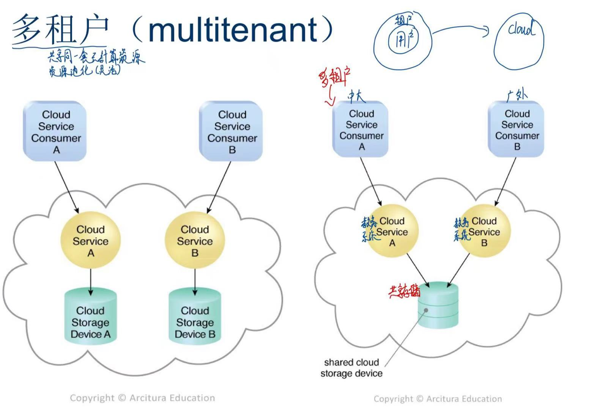
将资源集中起来，每个用户共享这些资源，但是每个用户的数据是隔离的。
就像共享充电宝，大家在用同一批资源，但互不影响。
风险与挑战
- 网络空间安全风险：把数据放在远程数据中心（云端），增加了安全风险。尤其是多租户情况下，大家的底层硬件资源是共享的。
信任边界重叠 ： 共享物理IT资源的云用户的信任边界是重叠的。 恶意的云服务用户将攻击目标设定为共享的IT资源，从而损害其他共享信任边界的云服务用户或IT资源。
- 运营管理控制风险：降低了对资源的控制能力。
- 软件移植性问题：例如阿里云和腾讯云的硬件配置不同，难以移植。
- 跨地区法律风险：例如数据只能存放在自己国家内。
服务和部署模型
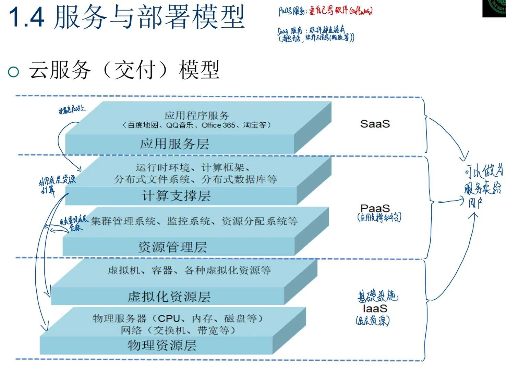
假设你想吃一顿炒饭：
Iaas：我租厨房自己炒！
PaaS：帮你备好锅和调料，只需要来炒！
SaaS：直接点一份外卖，啥都不用做！
Iaas（基础设施作为服务）
其实主要就是物理资源层和虚拟化资源层，将硬件资源作为服务提供给用户。
主要技术：虚拟化技术、资源动态管理和调度技术。
也可以通过租物理服务器来实现（不虚拟化），但是就会没有云特性了。
Paas（平台作为服务）
向用户交付的是已经设置好的 “就绪可用” 的环境。
提供应用软件的开发、测试、部署、运行环境。
主要技术：分布式文件系统、分布式数据库、并行计算框架。
Saas（软件作为服务）
云用户对于 Saas 的管理权限十分低。（因为都实现好了，当然 Iaas 管理权限最高）
将运行在云中的软件的功能交付给用户。
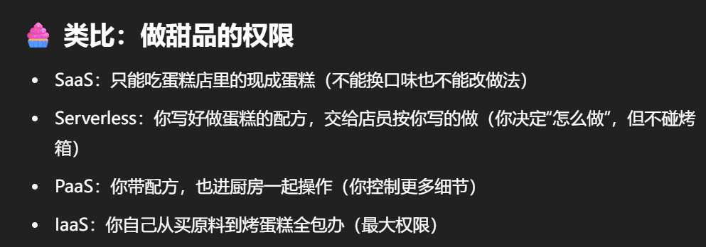
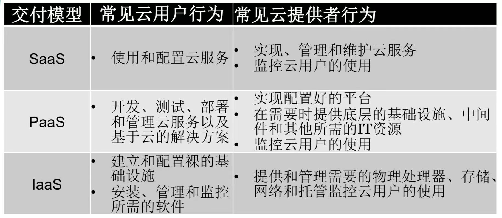
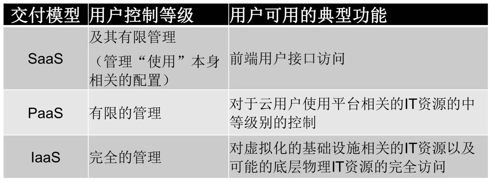
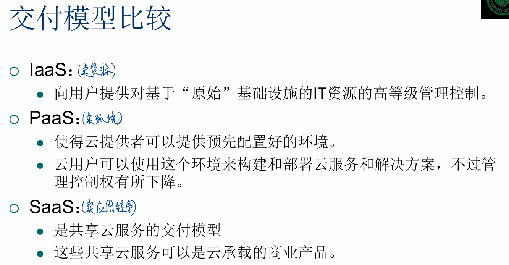
云部署模型
- 公有云：大家都可用。
- 社区云：由特定组织或行业的多个用户共享使用。例如
easyhpc的云计算课程作业只有选了这门课的才可以交。 - 私有云：只供一个组织自己使用。
- 混合云：结合公有云和私有云，核心数据放私有云，普通业务放公有云。
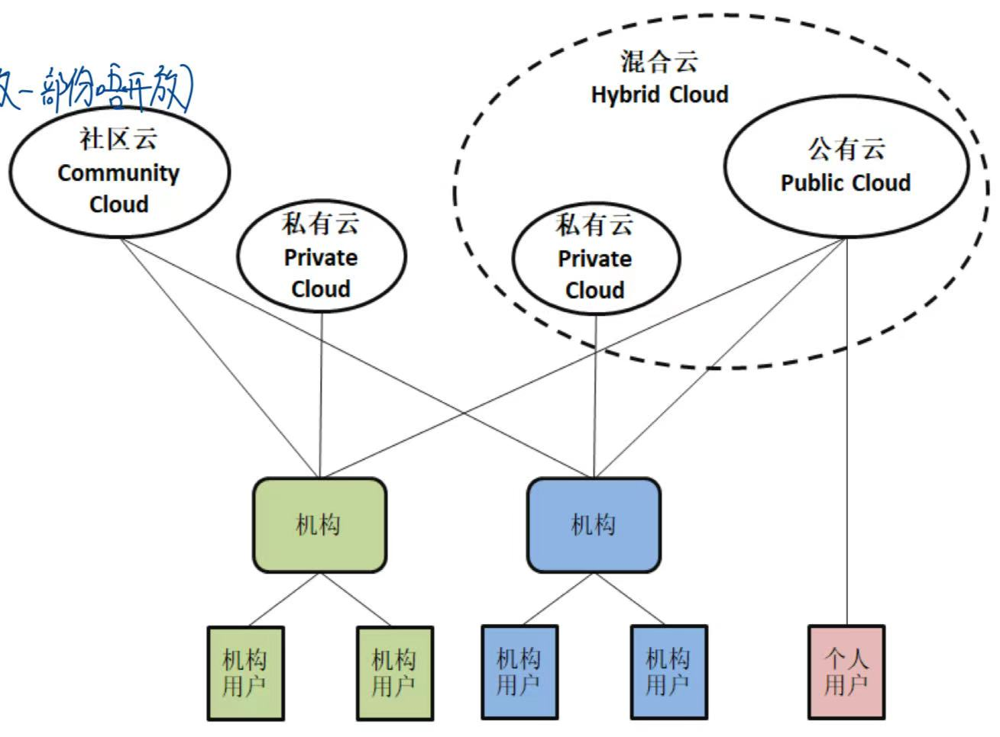
SLA 和 QoS
SLA 是云服务商和用户之间签的服务保证合同。
QoS 特性有以下指标：
- 可用性：关注的是出错后需要多少时间修复。
- 可用性比率：运行时间的百分比。例如：至少 99.5% 的运行时间。
- 停用时间指标：停用时间是指在某个可用性等级下，服务“最多可以宕机”的时间。例如：某云数据库服务承诺“99.99%”可用性，表示一年最多只能宕机 52 分钟。
- 可靠性：关注的是连续运行多久才出一次错。
- 平均故障间隔时间：系统连续运行的平均时间长度，直到下次故障发生。（Iaas、Paas）
- 可靠性比率指标：表示系统在某段时间内持续不出错的概率，是一个概率值，通常用指数衰减模型计算。(Saas)
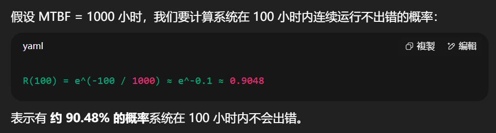
- 性能：例如像网络带宽、存储容量。
- 服务可扩展性：比如突然访问量暴增，系统能自动加资源支撑。
- 服务器可扩展性（水平）指标： 通过增加服务器节点的数量来扩展系统能力。
- 服务器可扩展性（垂直）指标： 通过增强单个服务器的硬件配置（CPU、内存等）来扩展系统能力。
- 弹性：IT 资源从运行问题中恢复的能力。
第二章：基础算法与机制
分布式通信（消息队列，rpc，多播与广播），时钟，互斥，选举，副本（一致性，为什么要一致性，最终一致性），主副本有什么差别，数据客户一致性差在哪里，共识（CAP，拜占庭和一般的区别），要知道paxos在做什么，BFT协议，分布式提交（二提交，三提交区别）
分布式通信
消息队列
一种异步通信机制，用来在分布式系统中解耦发送方与接收方。
- 就像一个“快递中转站”，发送者把消息投进去，接收者按需取出，不需要同时在线。
- 用户下单后，订单服务把消息放入“发货队列”，物流服务异步读取并处理。
- 会有 消息代理 将不同应用的信息转换（序列化和反序列化）并发送。
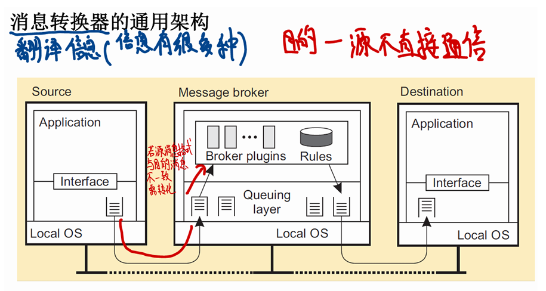
远程过程调用（RPC）
一种同步通信方式，使一个服务可以像调用本地函数一样调用远程服务的函数。
- 像“打电话咨询”，你发起一个请求，对方接听、处理后返回结果，你才能继续。
基本流程如下：
客户端流程
- 客户端调用本地代理（Stub）：
- 客户端调用一个本地方法（例如
doit(a, b)），看起来像本地函数调用。 - 实际上，这个方法会被传递给客户端的“Stub”（代理）处理。
- 客户端调用一个本地方法（例如
- 客户端 Stub 构建消息：
- 客户端的 Stub 将调用的函数名（
doit）、参数类型（如type1）和参数值（如val(a)）打包成一个消息。 - Stub 的工作是将本地调用转换为可以通过网络发送的消息（序列化）。
- 客户端的 Stub 将调用的函数名（
函数参数可能是复杂的对象、列表、字符串等，无法直接通过网络传输
- 客户端操作系统发送消息：
- 客户端 Stub 调用本地操作系统（Client OS）来通过网络发送消息到服务端。
服务端流程
- 服务端操作系统接收消息：
- 消息通过网络到达服务端的操作系统（Server OS）。
- 操作系统将消息传递给服务端的 Stub。
- 服务端 Stub 解包消息：
- 服务端的 Stub 从消息中提取出函数名和参数，将其翻译成服务端可以理解的本地调用。
- 服务端调用实际方法：
- 服务端 Stub 调用对应的实际实现方法（例如
doit方法）。 - 方法使用解包后的参数（如
val(a)和val(b)）进行计算，返回结果。
- 服务端 Stub 调用对应的实际实现方法（例如
服务端返回结果到客户端
- 服务端 Stub 构建响应消息：
- 服务端 Stub 将返回的结果打包成一个响应消息。
- 服务端操作系统发送消息：
- 服务端 Stub 调用操作系统，将响应消息通过网络发送回客户端。
- 客户端操作系统接收消息：
- 客户端操作系统接收响应消息，并将其传递给客户端的 Stub。
- 客户端 Stub 解包消息并返回结果：
- 客户端 Stub 解包消息，提取出返回值并将其交给调用者。
- 对客户端调用者来说，整个过程就像是一次本地函数调用。
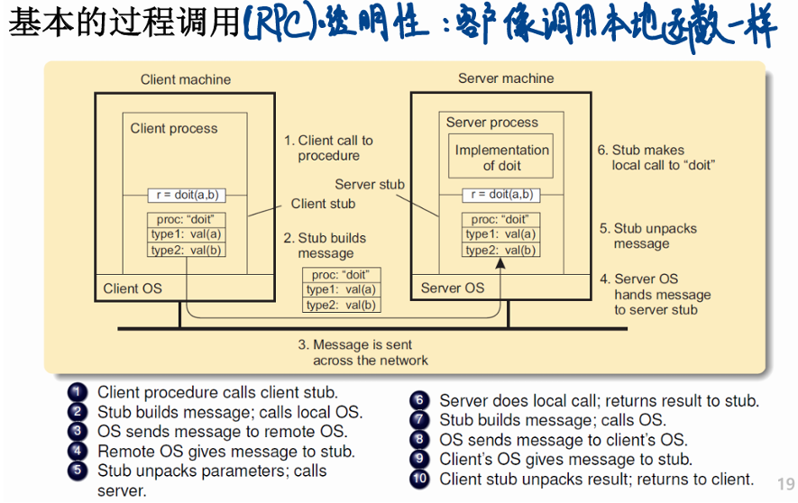
多播
一种发送一份消息给一组特定接收者的通信方式。
- 像“微信群发定向消息”——只发送给部分人（指定群组），不是全员广播。
- 可以使用数据结构 树 或者 网络 来实现。
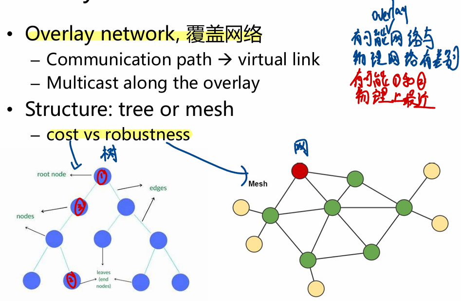
- 也可以基于 Gossip 实现：
| 模式 | 主动方 | 数据传播方向 | 特点 |
|---|---|---|---|
| Push | 发送者 | A ➝ B | 主动推送 |
| Pull | 接收者 | B ➝ A | 主动拉取 |
| Push-Pull | 双方 | 双向 | 高效传播 |
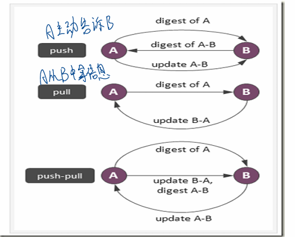
广播
向所有节点发送同一份消息的通信方式，不区分接收者。
- 像在“学校广播系统”中发通知，所有班级都能听到。
分布式同步
happen-before关系
所有的进程并不一定在时间上达成一致，而只需要在时间发生顺序上达成一致。
实际上隐含的是因果关系。
定义如下：
- 如果a 和 b 是同一个进程中的两个事件，并且 a 在 b 之 前到达，则有：a->b；
- 如果 a 是消息的发送者，b 是消息的接收者，则 a->b；
- 如果 a->b 并且 b->c 则 a->c；
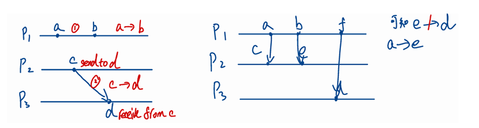
逻辑时钟
为每一个事件 e 分配一个时间戳 C(e) 使其满足以下属性：
- 如果 a 和 b 是同一个进程中的事件，并且a->b， 那么有：C(a) < C(b);
- 如果 a 是信息 m 的发送方，并且 b 是信息的接收者，那么C(a) < C(b);
这个时间戳实际上是一个计数器，每个进程自己维护，每当发生事件就加一这样子。
算法如下：
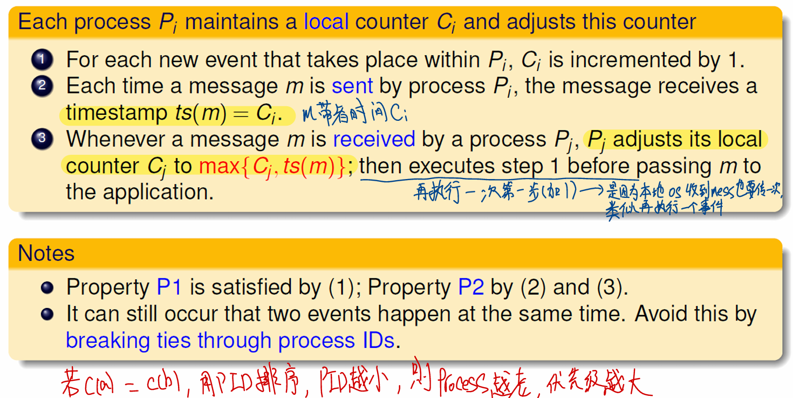
例子如下：
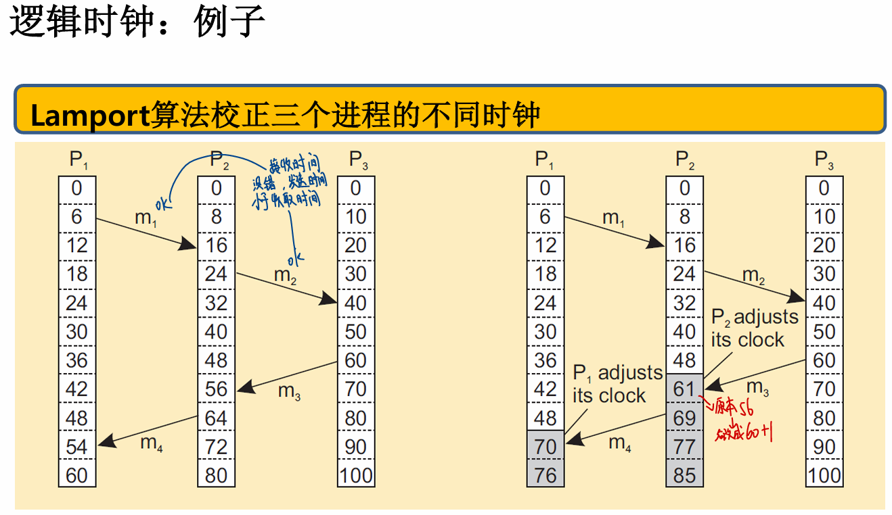
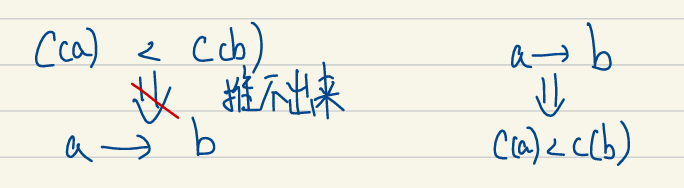
要记得！时间戳并不能推出因果关系！ 只有因果关系能推出时间戳关系！所以后面引入了向量时钟
全序多播
在一个分布式系统内，每个副本更新完之后多播自己的操作，要求满足所有副本上执行的并发操作顺序是一样的。
例如像两个人同时对一个银行账户操作，一个增加1%余额，一个增加100元余额，必须保证并发操作顺序一样才能够保证账户余额一致。
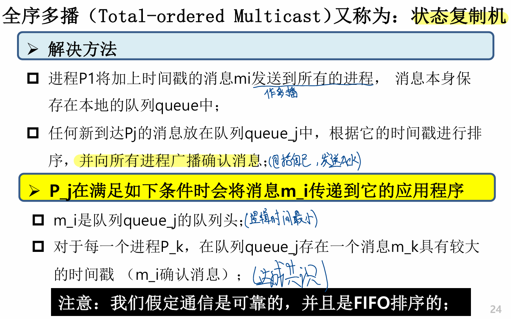
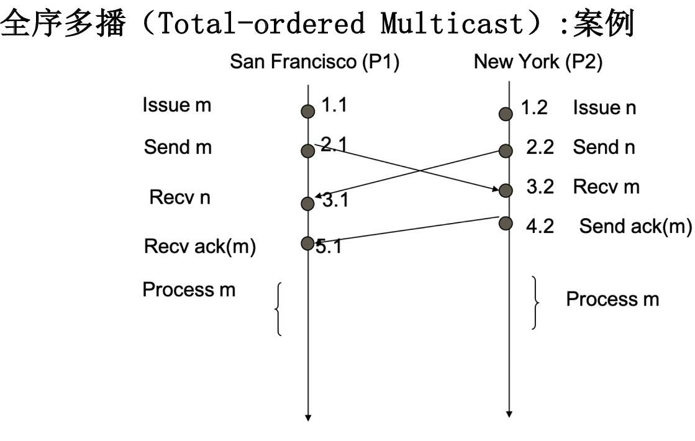
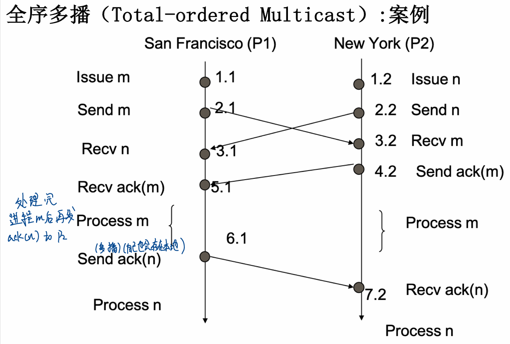
向量时钟
因为逻辑时钟不能从C(a) < C(b) 推导出 a->b，所以引入向量时钟来从时间戳推导出因果关系。
每个进程维护一个时钟向量（作为自己的全局视图）。
因果依赖
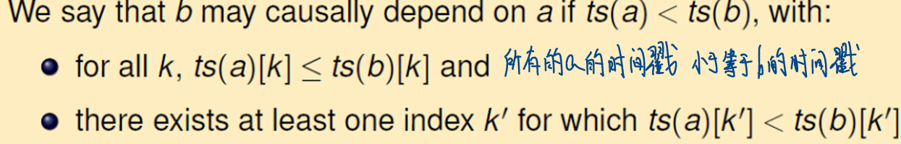
算法如下：
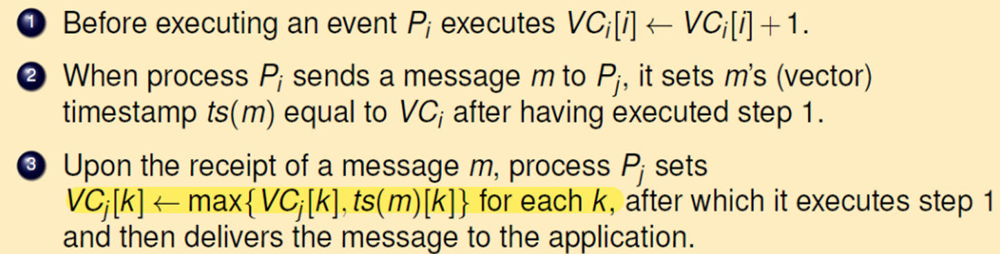
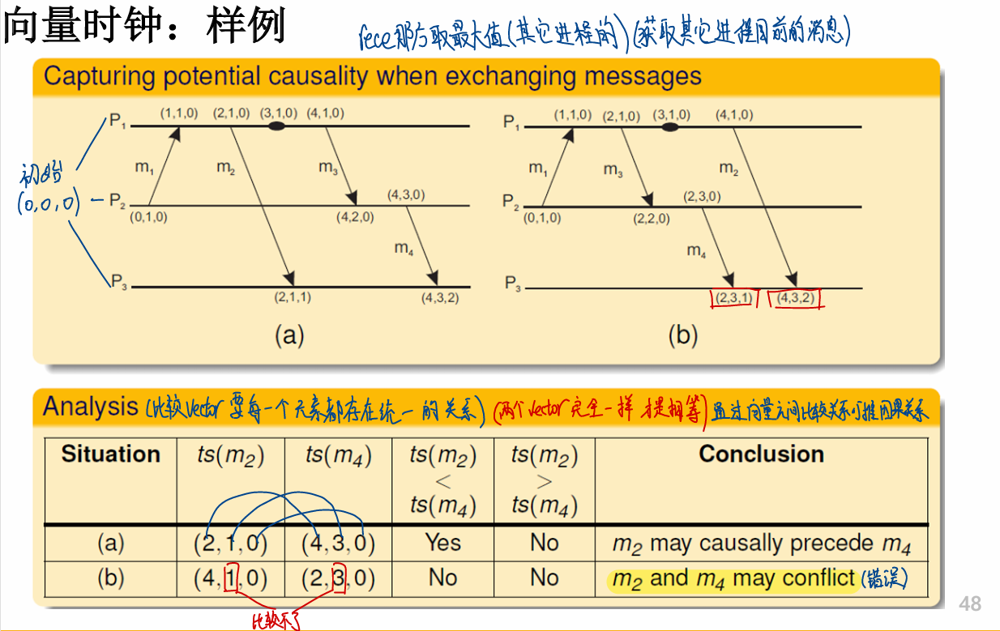
分布式互斥
分布式系统中的多个进程需要互斥地访问某些资源。
基于令牌的方法
仅有的一个令牌在进程之间传递。拥有令牌的进程 可以访问临界区或者将令牌传递给其他进程。
可能存在的问题：如果令牌传丢了（进程突然被kill了）或者令牌不知道传哪去了。
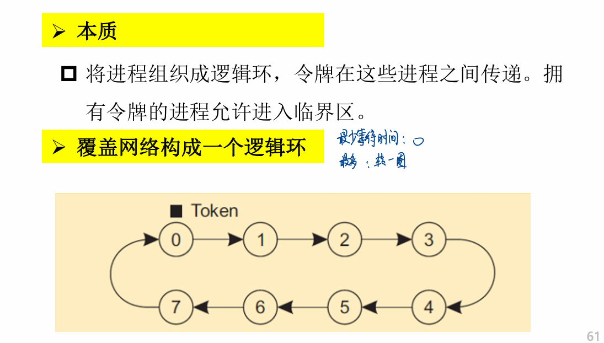
基于许可的集中式方法
找一个协作者来管理节点，其他节点如果想访问临界资源需要先询问协作者。
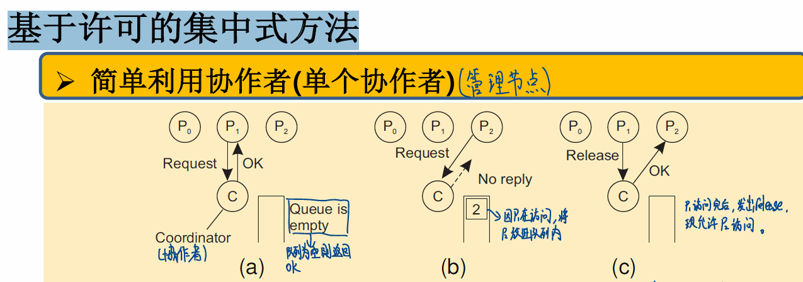
可能存在的问题：太依赖协作者了，如果协作者寄了就寄了。
非集中式算法
因此才有了下面这种分布式的协作者方法：假设每个临界资源有N个副本，每个副本都有一个协作者管理访问，一个进程 m 需要获得 N/2 个协作者的许可（过半数）即可访问临界资源，避免单一协作者crash之后崩溃。
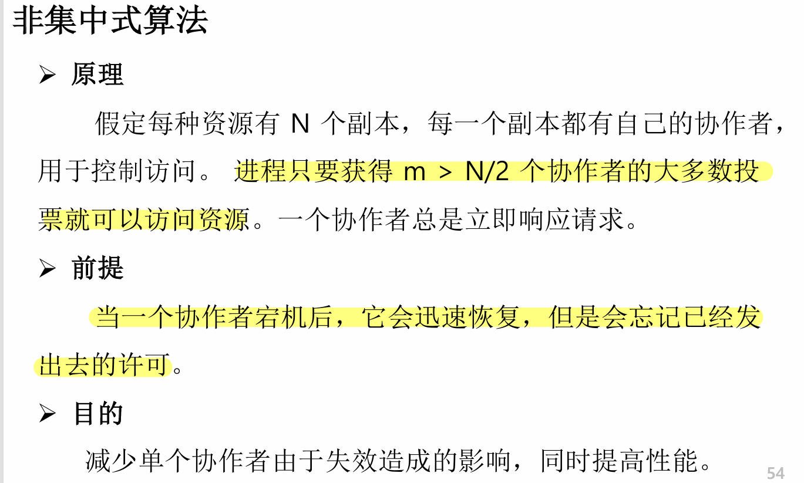
但是存在一个问题：
Ricart & Agrawala互斥算法
要求系统中的所有事件都是完全排序的。对于每对事件， 比方说消息，哪个事件先发生都必须非常明确。
进程要访问共享资源时，构造一个消息，包括资源名、它的进程号和当前逻辑时间。然后发送给所有的其他进程
接收到消息的决策动作分为三种情况：
- 若接收进程没有访问资源，而且也不想访问资源，向发送者返回一个OK消息；
- 若接收者已获得对资源的访问，那么它就不答应，而是将该请求放入队列中；
- 如果接收者想访问资源但尚未访问时，它将收到消息的时间戳与它发送到其他进程的消息的时间戳进行比较。时间戳早的那个进程获胜，如果接收到的消息的时间戳比较早，那么返回一个OK消息。如果它自己的消息的时间戳比较早，那么接收者将收到的消息放入队列中，并且不发送任何消息；
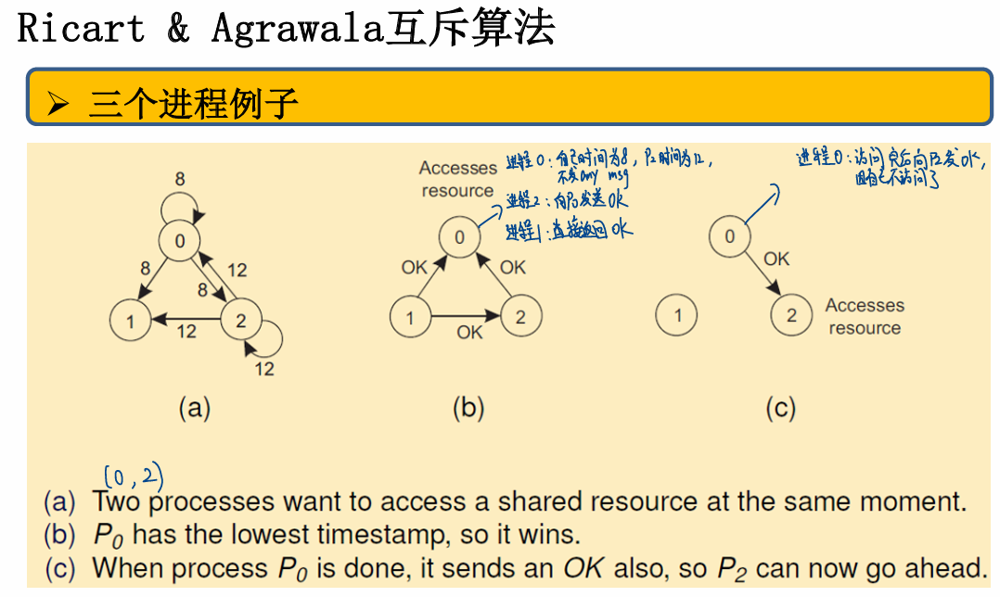
算法遇到的问题：若有单个进程crash了算法就跑不动了，因为需要全部进程发ack。并且每次想访问就进行多播，网络流量大大的增加。进程需要维护一个消息队列，不适用于进程多的情况。
分布式选举
选举算法
某些算法需要一些进程作为一个协作者。问题是如何动态的选择（自动选择）这个特殊的进程。
基本假设
- 每个进程都有一个ID。
- 每个进程都知道其他进程的ID，但是不知道它们是否还在运行。
- 选举算法是找到具有最大ID的活跃进程。
bully 算法
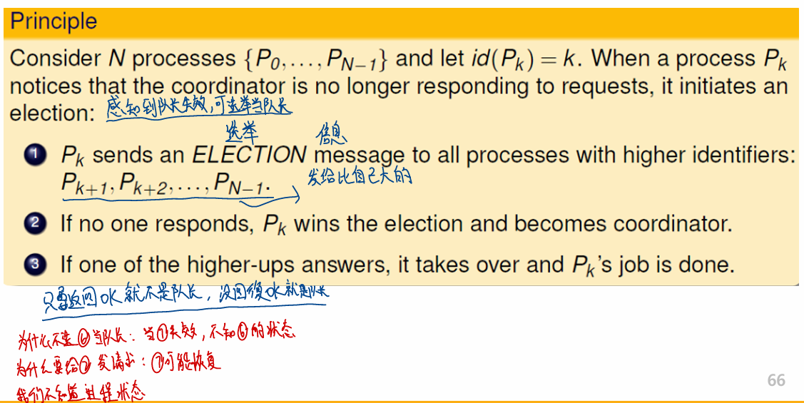
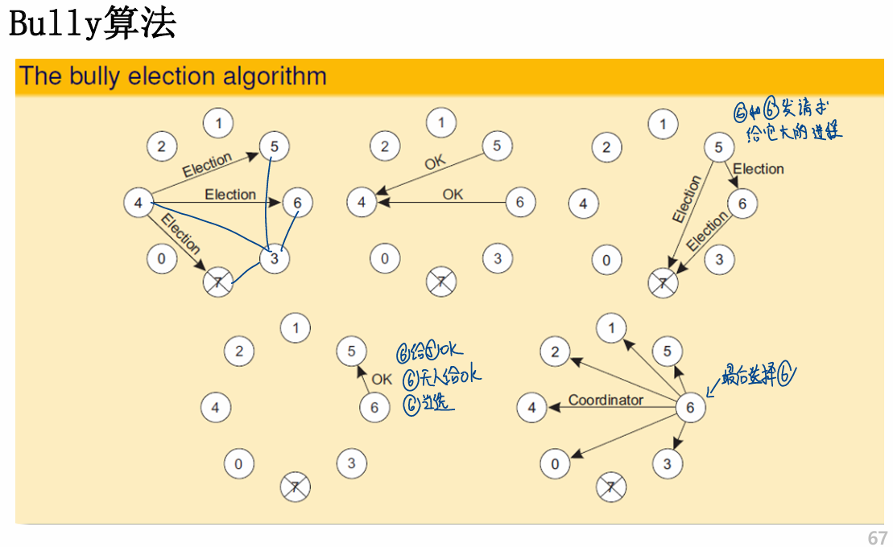
Ring 算法
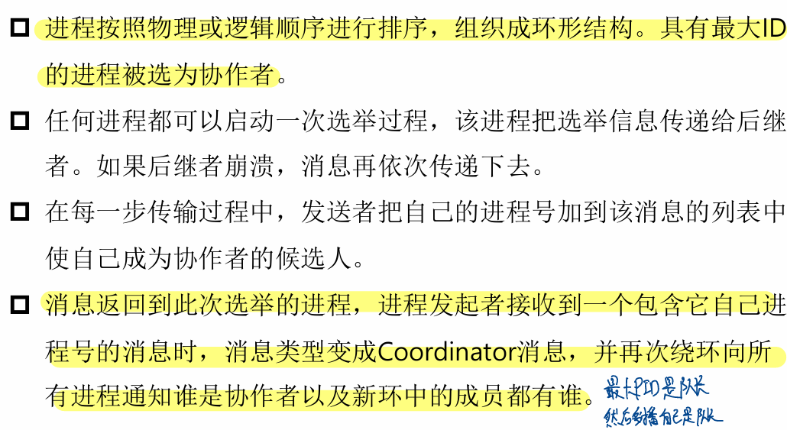
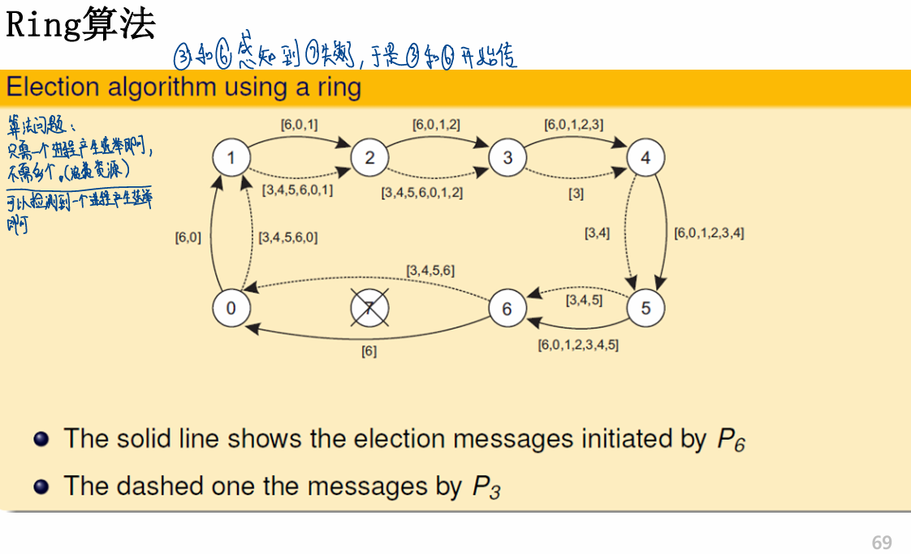
数据副本和一致性
一致性模型实际上本质是进程（客户）和数据存储的一个约定。当对数据存储的操作需要满足一定的规则，才会正常存储。特别是当多个进程发生并发读写操作，需要如何返回结果。
一致性模型解决了分布式系统中的核心问题：并发操作导致的结果不确定性。
数据一致性和客户一致性区别
先讨论数据一致性模型的特点：读写并重的数据存储，以进程作为视角。
但是以客户为中心的一致性模型是读多写少的，即大部分都是查询操作，所以提供弱一致性（最终一致性），以副本作为视角。
从单个客户端的角度出发，确保它在不同时间或不同节点上看到的数据符合直觉逻辑。
即使全局数据暂时不一致，只要客户端本身看到的数据变化合理，就认为符合客户一致性。
适合数据一致性的场景：银行系统，需要确保每个账号的写操作顺序是一致的；库存管理系统，不允许衣服超卖了。
适合客户一致性的场景：社交媒体平台（朋友圈），允许有更新延迟；在线协作工具。
数据一致性
顺序一致性
以数据为中心的一致性模型。
任何时候的执行结果都是相同的，所有进程对数据存储的操作是按照某种顺序序列执行的，并且每个进程的操作按照程序所定制的顺序出现在这个序列中。
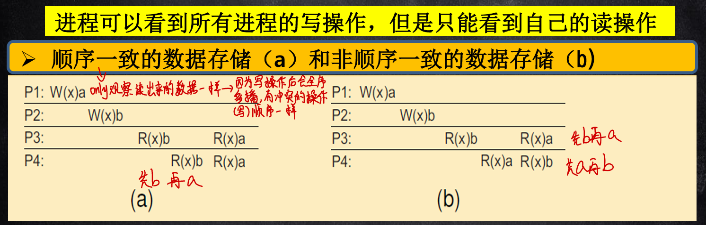
只需要观察每个进程的读操作是否顺序一样即可。
因果一致性
一种弱化的顺序一致性模型。
所有的进程必须要以一样的顺序看到具有因果关系的写操作。
不同进程看到的并发写操作可以不同。
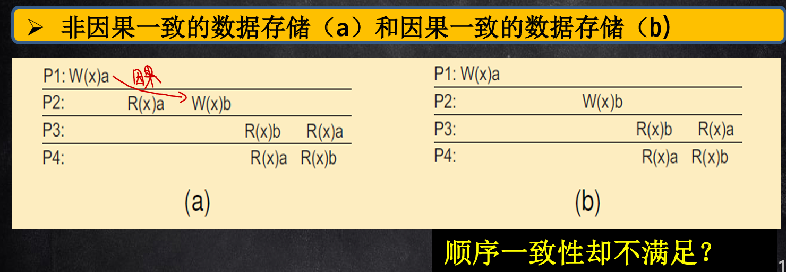
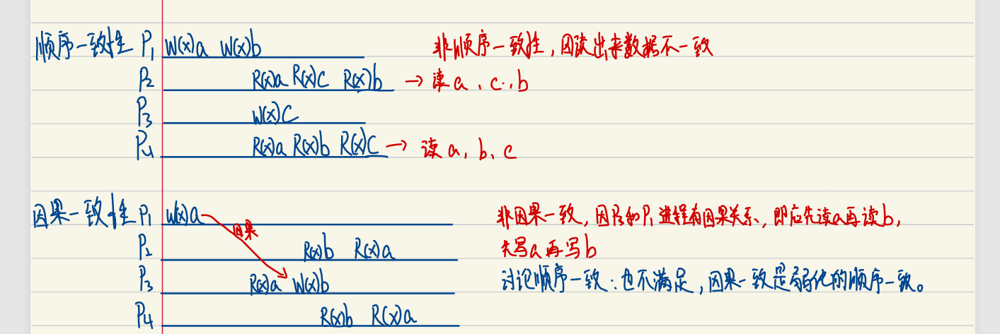
基于主备份的协议（数据一致性）
分为远程写协议和本地写协议。
远程写协议
从名字看，实现数据项X的更新是在远端的主备份上实现的。
所有读操作和写操作都转发给单个固定的远程（主）服务器：要在数据项 x上执行一个写操作的进程，会把该操作转发给x的主服务器。该主服务器在其 x 的本地副本上执行更新操作，随后把该更新转发给备份服务器。
写操作：经过的比较长，W1-W2-W3-W4-W5
可靠性很好，但是性能不高。
实现了顺序一致性，完成了阻塞操作。
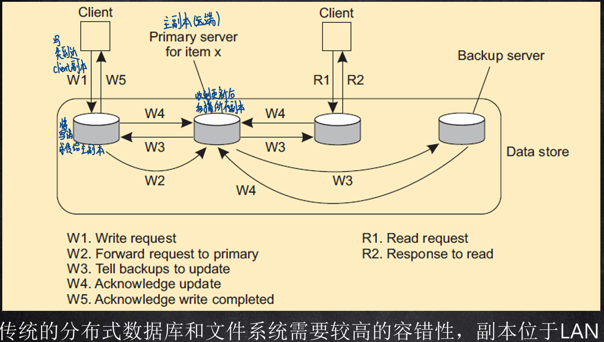
本地写协议
主副本在要执行写操作的进程之间迁移：某个进程对x进行写操作，则定位x的主副本，然后将x转移到自己的位置上。 W3处就已经返回了。
在断网之前将数据保存在本地，然后修改是对本地操作的，等重新联网后向原来的主备份同步。
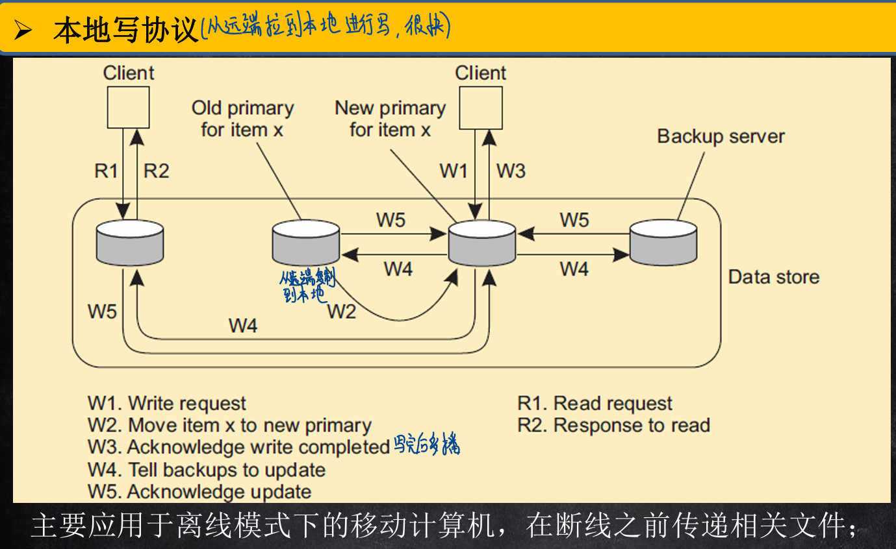
客户一致性
最终一致性的优缺点
定义：如果副本最近很长一段时间没有更新操作，那么所有副本都会变得趋于一致。简单来说，就是更新操作最终会传到每个副本。
优点：只要求更新操作能传播到副本即可，开销小。
缺点：如果用户访问到了还未更新的节点则会发现不一致性。
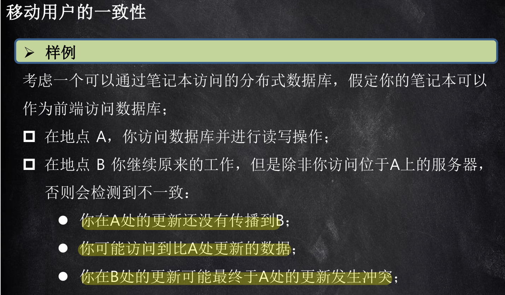
读写一致性
单调读：一旦一个进程读取了某个数据项的某个版本，接下来的所有读取操作将只会看到相同或更新的版本。
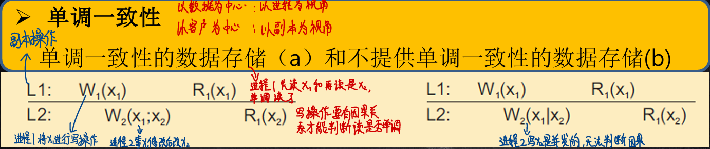
单调写：一个进程对数据项 x 执行的写操作必须在该进程对 x 执行任何后续写操作之前完成。
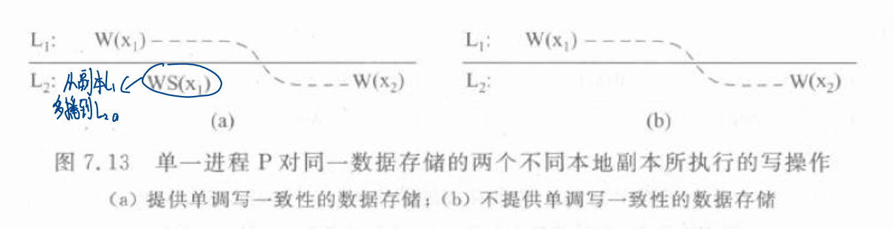
读写一致性：一个进程对 X 的写操作总是会被该进程后续对 X 的读操作看见。
即一个用户一定能看见自己写入的内容。
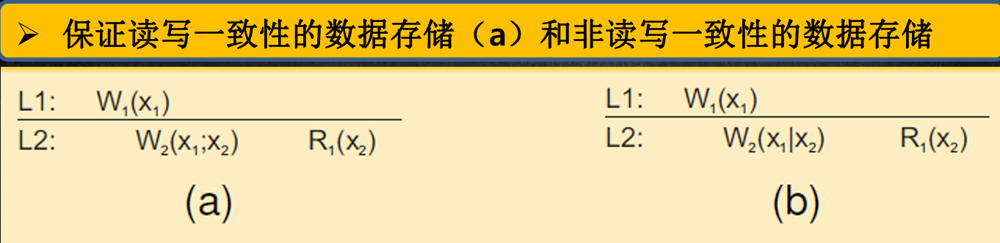
例子：更新自己的Web界面，确保自己刚刚修改的内容能够被自己重新登录Web页面看见（不是读取缓存的界面）。其他用户的更新可能一会才看到，但是自己的更新是立刻被看到的。
写读一致性
写读一致性：一个进程对 X 进行读操作后的写操作，保证发生在与 X 取值更新的值上或者与之相等的情况。
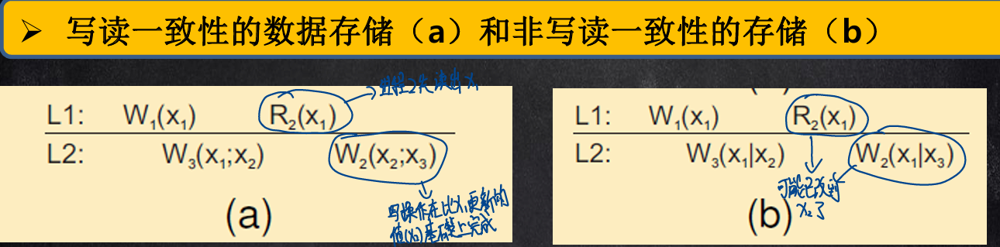
例子：刷新闻的时候看到原文章才能看到回复文章。
分布式共识
定义：有故障场景下，使所有非故障进程在有限步骤内就某个值达成一致
| 共识类型 | 场景 | 能容忍的故障类型 |
|---|---|---|
| 一般共识 | 只考虑节点“宕机”或“不响应” | 宕机（Crash） |
| 拜占庭共识 | 节点可能行为异常，甚至恶意作假 | 拜占庭错误（恶意、错误、伪造等） |
- 一般共识：至少 2f + 1 个节点，才能容忍 f 个宕机节点。
- 拜占庭共识：至少 3f + 1 个节点，才能容忍 f 个拜占庭节点（即：可恶意撒谎的节点）。
paxos，raft，泛洪，ZAB是处理一般共识问题的。
BFT，PBFT，PoW是处理拜占庭共识问题的。
CAP 原理
CAP原则又称CAP定理，指的是在一个分布式系统中，Consistency（一致性）、 Availability（可用性）、Partition tolerance（分区容错性），三者不可得兼得。
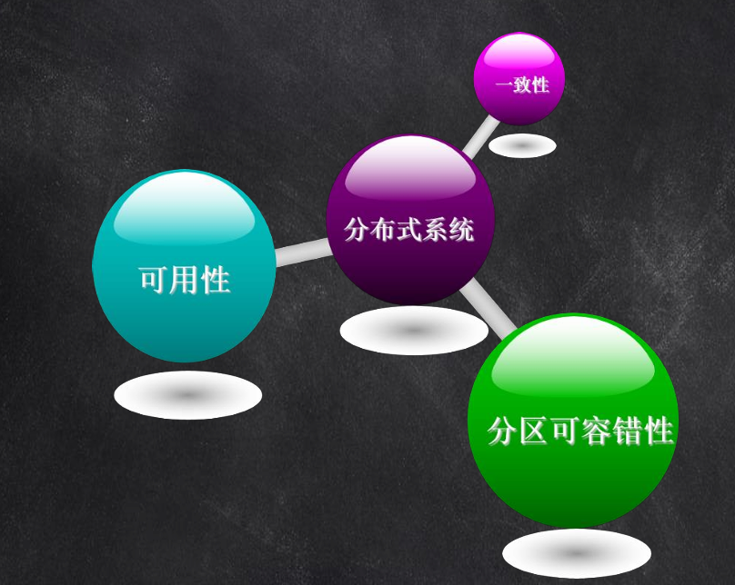
- 一致性：无论用户从哪个节点访问副本，都会获得最新的副本版本。
- 可用性：无论用户何时开始访问，都会获得响应。
- 分区可容忍性：系统需要在部分节点通信失败的时候系统仍能运作。
三者不可兼得，简单来说：一个分布式系统在网络分区存在时，必须权衡：
- 是否保证一致性，但可能牺牲可用性。
例如像保证分区可容忍性和一致性，就不能保证可用性，因为当发生某些节点通信失败的时候，为了保证副本的一致性，就不允许用户进行操作（可用性）。
- 是否保证可用性，但可能牺牲一致性。
保证分区可容忍性和可用性，即在发生通信失败的时候为了响应客户的访问，可能会造成一致性的问题。
分区可容忍性是分布式系统避免不了的一个情况！！
分布式提交
一个操作要么被进程组中的每一个成员执行，要么一个都不执行。（原子多播的更一般化抽象）
两阶段提交协议：
- 协作者发起投票请求。
- 参与者收到投票请求，并根据自身情况返回 abort 或者 commit。
- 协作者收集请求，如果没有收到 abort，则发送 global commit；否则，发送 global abort.
- 参与者根据收到的全局消息执行对应的动作。
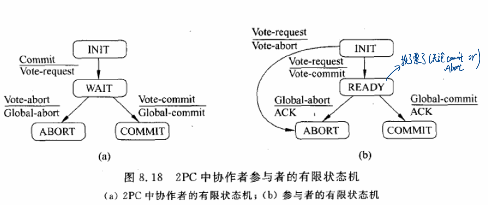
如果协作者在wait阶段崩溃，则整个协议就崩了。
三提交协议：
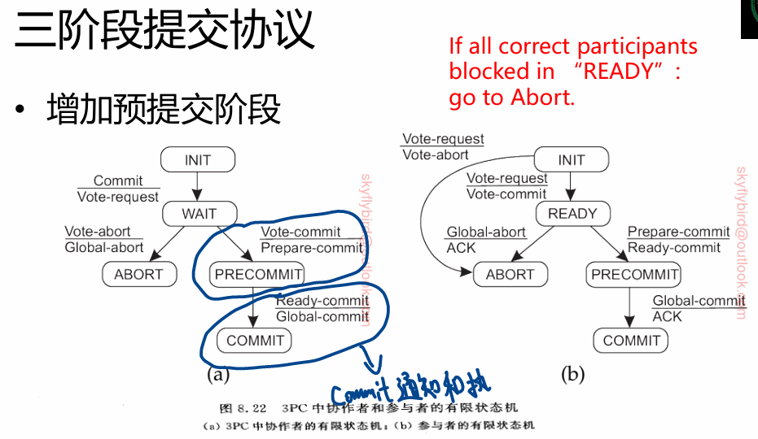
第三章：虚拟化技术
这里基本上讲的是基础设施部分，部署模型的 Iaas 部分。
虚拟化是指将物理 IT 资源转化成虚拟 IT 资源的过程。（例如服务器、存储设备、网络、电源都可以被虚拟化）
虚拟化技术的优势
- 硬件无关性：
- 意思是装好的系统可以在虚拟化后的硬件上运行，不关心实际的硬件是什么配置的服务器。
- 不用担心硬件型号不一样，换台机器就崩了。
- 服务器整合：
- 可以在一台物理服务器上创建多台虚拟服务器，可以提高资源利用率，是云特性的基础。
- 资源复制：
- 虚拟机的状态可以保存为文件形式，最终可以通过文件来实现虚拟机的迁移。
虚拟机架构
基于操作系统的虚拟化--寄生架构
- 虚拟机是建立在一个已经运行的操作系统之上的。
- 所有虚拟机共享同一个操作系统内核，就像住在同一个大楼里的不同租户。
- 启动快、占资源少，但安全性稍差，不能运行不同操作系统。
安全性差是因为共享操作系统内核，如果其中一个虚拟机被攻击了可能会影响其他虚拟机。
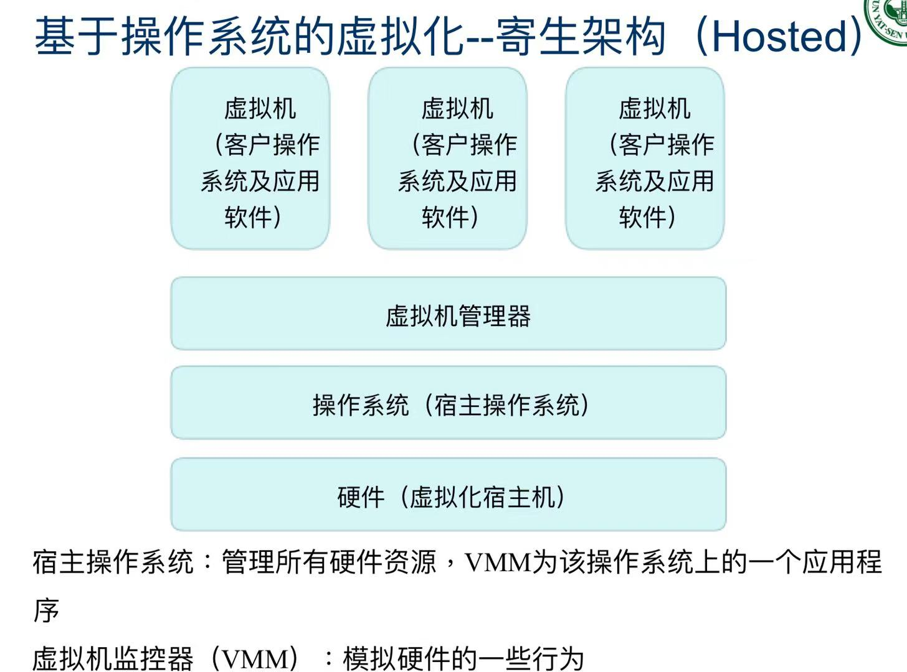
基于硬件的虚拟化--裸金属架构
- 不依赖已有操作系统，虚拟机直接控制底层硬件。
- 每个虚拟机都可以跑自己的操作系统（Windows/Linux都行），隔离性好、安全性高。
- 比较适合云平台、大型数据中心，但启动慢、资源开销大。
启动慢是因为需要像电脑一样启动整个操作系统。
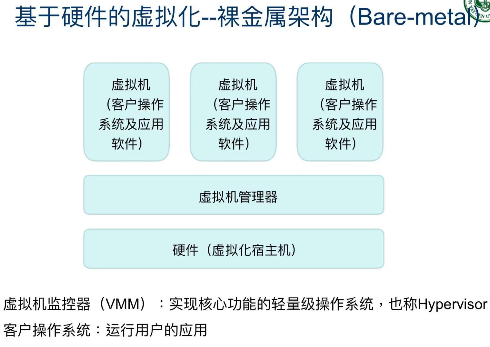
虚拟机技术
都是在“模拟一台电脑的硬件”，让你可以在一台物理机器上跑出多个“虚拟机器”。
硬件仿真
- 寄生架构。
- 利用软件来模拟一整套硬件给操作系统用。
- 技术要点：特权指令 >> 陷入 >> VMM >> 模拟执行 >> 特权指令（Host）
- 像在纸上画了一个键盘给人打字，能用但很慢。
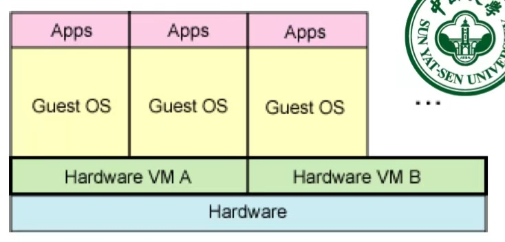
全虚拟化（最常见）
- 寄生架构和裸金属架构都有。
- Hypervisor 会在客户操作系统和硬件之间捕捉对虚拟化敏感的特权指令，使得客户操作系统无需修改，就像在一个真实硬件上运行。
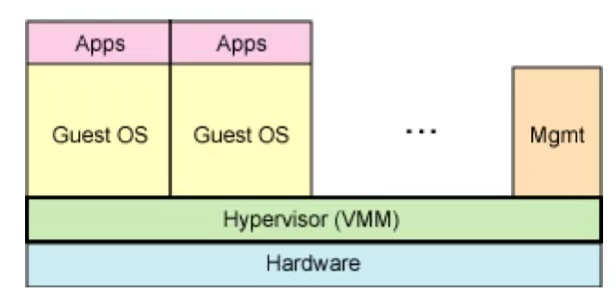
半虚拟化
- 裸金属架构
- 与全虚拟化类似，利用Hypervisor实现对底层硬件的访问。
- 客户操作系统需要直接将对虚拟化敏感的特权指令交给Hypervisor（全虚拟化是自己捕捉），所以需要更改客户操作系统。
- 效率很高。
半虚拟化就像演员知道自己在演戏，会主动配合摄影机和导演的安排，拍得更快。
而全虚拟化的演员被“骗”以为是真实世界，需要后台偷偷拦住他做错动作。
硬件辅助虚拟化
- 虚拟机直接访问硬件。（不通过Hypervisor了）
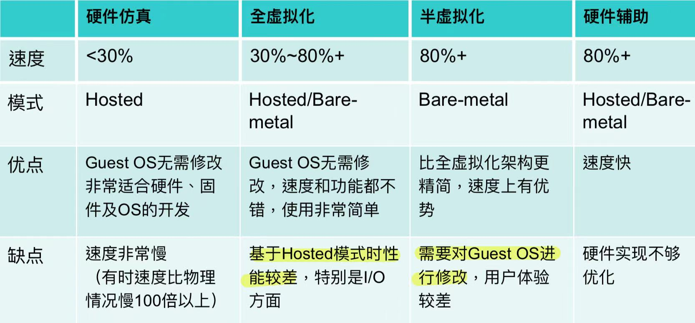
CPU 虚拟化
CPU 虚拟化是让多个 Guest 系统“共享用一颗 CPU”，
并让每个系统以为自己“独占”了这颗 CPU。
核心问题是 特权/敏感指令执行。这些指令都需要在最高特权级上运行，如果不在最高特权级运行会引发异常陷入到最高特权级。
例如虚拟机作为一个应用程序运行在宿主操作系统内（不在最高特权），但是虚拟机需要调用特权指令（需要最高特权）就会存在问题。
正常情况下，只有操作系统才能执行“控制 CPU 的指令”（比如中断、内存映射）。
为了让多个操作系统共存，虚拟机管理器（VMM）通过“拦截这些指令”，在背后偷偷“代劳”。
RISC体系指令会比X86更加适合虚拟化。
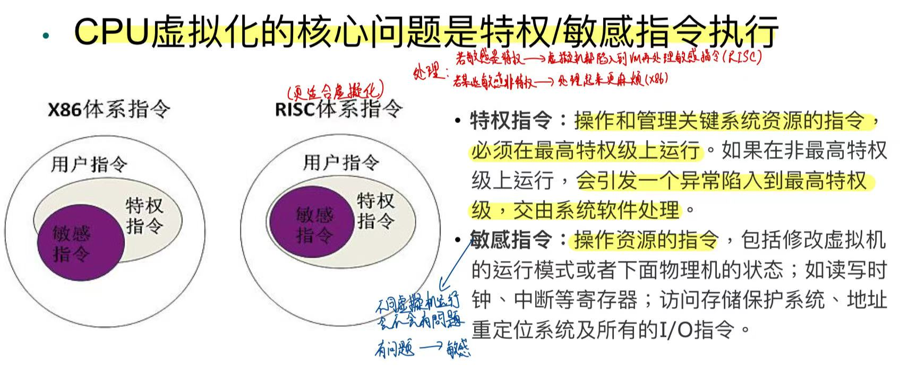
CPU全虚拟化（模拟执行）
使用到优先级压缩技术（把客户操作系统改成 Ring 1）：
- 优先级压缩能让VMM和Guest运行在不同的特权级下。
- 让VMM截获一部分在Guest上执行的特权指令，并对其进行虚拟化。
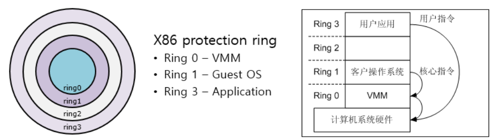
执行流程如下：
- Guest OS 在 Ring 1 运行，试图执行特权指令（比如访问内存页表）。
- CPU 发现：你不是 Ring 0，不能执行 → 触发“陷入”事件。
- VMM（在真正的 Ring 0）接手，模拟这个指令的结果。
- 然后把“假结果”返回给 Guest OS，让它继续运行，以为自己干成了。
也有使用到二进制代码翻译技术：
- 用于一些对虚拟化不友好的指令。
- 通过扫描并修改Guest的二进制代码来将那些难以虚拟化的指令转化为支持虚拟化的指令。
当 Guest 操作系统里有一些 无法被正常虚拟化的指令，我们就偷偷把这些指令 改写成别的、能拦截的指令。
CPU半虚拟化（操作系统辅助）
- 通过修改Guest OS的代码（和半虚拟化虚拟机一样需要修改客户操作系统），使其将那些和特权指令相关的操作都转换会发给VMM的Hypercall（超级调用）
CPU硬件辅助虚拟化（CPU能够分清谁是虚拟机）
- Root模式，VMM运行于此模式，用于处理特殊指令。
- Non-Root模式，Guest OS运行于此模式。
- 当在Non-Root 模式Guest执行到特殊指令的时候，系统会切换到Root模式VMM，让VMM来处理特殊指令。
很像操作系统的中断一样。
内存虚拟化
目的：做好虚拟机内存空间之间的隔离，使每个虚拟机都认为自己拥有了整个内存地址，并且效率也能接近物理机。
全虚拟化（影子页表Shadow Page Table）
- 为每个客户维护一个影子页表，写入虚拟化后的内存映射（GVA 到 HPA）。
- GVA->GPA->HVA->HPA→SPT。
- VMM将影子页表交给MMU进行地址转换。
硬件辅助虚拟化（EPT/NPT）
- 虚拟机内部维护自己的GVA->GPA页表结构。
- 硬件辅助维护 EPT/NPT 来进行GPA->HPA的映射。
IO虚拟化
I/O 虚拟化是指让虚拟机可以“访问磁盘、网卡等设备”，
虽然它们用的是假的设备接口，但最终由宿主机的真实硬件完成。
目的：不仅让虚拟机访问到它们所需要的I/O资源，而且要做好它们之间的隔离工作，更重要的是，减轻由于虚拟化所带来的开销。
全虚拟化
- 通过模拟I/O设备（磁盘和网卡等）来实现虚拟化。
- Guest OS每次I/O操作都会陷入到VMM，让VMM来执行。
- 对Guest OS而言，它看到就是一组统一的I/O设备，完全透明。
半虚拟化
- 通过前端（Front-End）/后端（Back-End）架构，将Guest的I/O请求传递到特权域（Privileged Domain，即Domain-0）。
- 前端（Front-End）：Guest OS 中的驱动程序，发送 I/O 请求。
- 后端（Back-End）：运行在主系统（特权域 Domain-0）中的服务，负责真正的 I/O 执行。
- 需要修改客户操作系统！
软件模拟虚拟化
- 用软件模拟I/O设备。
- Guest OS的操作被VMM捕获并交给Host OS的用户态进程，由其进行系统调用
硬件辅助虚拟化
- 让虚拟机能直接使用物理设备。
Open Stack
OpenStack可以规划并管理大量虚拟机，从而允许企业或服务提供商按需提供计算资源。
主要组件
| 组件 | 作用 |
|---|---|
| Nova | 提供计算资源 |
| Neutron | 提供网络资源及网络连接 |
| Glance | 提供镜像 |
| Cinder | 提供块存储资源 |
| Swift | 提供数据备份、镜像备份 |
下列关于 OpenStack 中 Nova 组件的说法正确的是：
A. 提供对象存储服务 B. 管理虚拟机和计算资源 C. 实现身份验证和授权 D. 负责虚拟机镜像管理
答案：B
解析：
Nova 是 OpenStack 的 计算核心组件，用于启动、关闭、调度虚拟机等。
A 是 Swift，C 是 Keystone，D 是 Glance。
---
OpenStack 属于以下哪种云计算服务模型？
A. SaaS（软件即服务） B. PaaS（平台即服务） C. IaaS（基础设施即服务） D. FaaS（函数即服务）
答案：C
解析： OpenStack 提供的是基础设施层的服务（如虚拟机、网络、存储），属于 IaaS，与 AWS EC2 类似。
---
下列哪个组件用于 OpenStack 的身份认证与授权管理？
A. Nova B. Neutron C. Keystone D. Glance
答案：C
解析：
Keystone 是 OpenStack 的 认证与访问控制中心，负责用户认证、服务注册、令牌管理。
---
下列关于 OpenStack 中 Glance 组件的功能描述，最准确的是：
A. 管理网络拓扑结构和路由 B. 提供用户身份和权限管理 C. 存储虚拟机运行时数据 D. 管理虚拟机镜像文件
答案：D
解析： Glance 是 OpenStack 的 镜像服务组件，用于上传、下载、查询、删除 VM 镜像。
---
在 OpenStack 中，如果希望实现块存储（虚拟硬盘），应使用哪个组件？
A. Swift B. Cinder C. Heat D. Horizon
答案：B
解析：
Cinder 提供 块存储服务，可以将存储卷挂载到虚拟机上。
Swift 是对象存储，Heat 是编排服务，Horizon 是 Web 控制台。
---
用户通过 OpenStack 启动一台虚拟机，以下组件中不会直接参与该过程的是：
A. Nova B. Keystone C. Glance D. Ceilometer
答案：D
解析：
Ceilometer 是监控和计费组件，不直接参与虚拟机的创建过程。
创建 VM 需要 Nova（调度）、Keystone（认证）、Glance（镜像）、Neutron（网络）。
容器技术（操作系统级别虚拟化）
容器在操作系统中的运行：
- 容器自带环境在操作系统中启动进程。
- 所有容器共用一个操作系统。
- 通过命名空间和进程组来提供隔离性。
因为共用一个操作系统，所以隔离性没有虚拟机好（每个虚拟机一个操作系统）。但是性能好过虚拟机。
容器虚拟化优势
- 轻量级虚拟化，没有独立的操作系统，额外开销很小。
- 每个主机可以支撑上千容器，且容器启动时间在毫秒级。
- 自带运行环境，开发过程中打包好的应用，在生产环境中能迅速部署。
容器虚拟化劣势
- 隔离性、安全性较差。
- 多容器共享操作系统，不能随意修改操作系统相关的配置。
容器轻便高效，适合快速部署和微服务。
虚拟机隔离强安全性高，例如银行核心交易系统。
容器基本技术
- Namespace
- 视图隔离
- 让进程只能看到Namespace中的世界
它让不同容器之间 看不到彼此的进程、网络、挂载点等，就像每个容器是“自己的一台机器”。
自己的 PID 为 1。
- Cgroups
- 资源隔离
- 对容器进行分组，可以按照组来管理
容器共享同一台宿主机的资源，但不能互相抢资源或用光资源，就是靠 cgroups 限制的。
- Rootfs
- 就是所谓的“容器镜像”
- rootfs 只是⼀个操作系统所包含的文件、配置和目录， 但不包括内核
Rootfs 是容器“看到的根目录世界”，相当于给容器单独配了个文件系统家。
下列哪项是 Linux 容器中实现资源限制的关键技术？
A. Namespace B. Rootfs C. Cgroups D. OverlayFS
答案：C
解析： Cgroups（Control Groups）用于限制 CPU、内存、IO 等资源的使用。Namespace 实现隔离，Rootfs 是文件系统，OverlayFS 是分层存储。
---
容器之间可以拥有不同主机名、不同网络配置，是因为使用了哪种技术？
A. Rootfs B. Dockerfile C. Namespace D. DaemonSet
答案：C
解析： Namespace（尤其是net和utsnamespace）让每个容器拥有独立的网络和主机名视图。Rootfs 是文件系统，DaemonSet 是 K8s 里的控制器。
------
容器的文件系统来自于镜像的哪一部分？
A. Kernel B. Rootfs C. Entrypoint D. Tag
答案：B
解析： 镜像中的 Rootfs 是容器运行时看到的/根文件系统，如/bin,/etc等。Kernel 是共享的，Entrypoint 是启动命令。
------
以下哪个选项不是由 Namespace 提供的隔离能力？
A. 网络隔离 B. 内存隔离 C. 主机名隔离 D. 进程视图隔离
答案：B
解析： 内存资源的隔离是由 Cgroups 实现的，而网络（net）、主机名（uts）、进程（pid）是 Namespace 提供的。
------
使用 Cgroups 创建多个控制组的主要目的是：
A. 把容器部署在不同主机上 B. 设置容器的启动顺序 C. 对进程分组，并控制它们的资源使用 D. 安装 Linux 内核模块
答案：C
解析： Cgroups 的“Groups”指的就是对进程进行分组，统一设置资源限制或监控。
------
容器技术采用哪种方法来避免为每个实例都启动一个完整操作系统？
A. 每个容器都运行一个轻量内核 B. 容器共享宿主机内核，使用 rootfs 隔离文件系统 C. 每个容器内嵌独立 Linux 发行版 D. 容器使用虚拟化 BIOS 启动系统
答案：B
解析： 容器共享宿主机内核，只在用户空间创建 rootfs 实现文件系统隔离，不是完整虚拟机，不含独立内核。
Kubernetes集群
集群架构（主从）
- Master节点
负责管理和调度整个集群的 pod。
负责与集群外交互。
- Node节点
集群中具体执行任务的节点。
核心概念
- Pod： 由一个或多个互相协作的容器组成。（一起start，一起终止）
- Service：提供一组 Pod 的统一访问入口（负载均衡 + 发现），即使 Pod 被替换、IP 改变，Service 仍保持访问地址稳定。
就是访问 Pod 不需要使用 ip，而是使用 Service 来访问。
- Replication Controller：负责保证某个 Pod 的副本数始终等于预期数量，如果有 Pod 挂了，它会自动重启新的 Pod。
- Label：为集群提供管理信息。
- Namespace：适合多团队开发。
你有一个网站程序要部署 3 个副本，Kubernetes 会：
1. 找到 3 台服务器（Node）
2. 在每台上启动一个 Pod，里面跑你的程序容器
3. 设置健康检查，如果挂了自动重启
4. 给它们分配统一的访问地址（Service）
5. 后续你想更新版本，只要改配置，它自动滚动升级
网络虚拟化
目的：将网络资源（路由器、二层交换机、三层交换机）和功能集成到一个软件中统一管控。
主机网络虚拟化
目的：如何让虚拟机共享一个网卡。
假设你有一台物理机（Host）只有一个网口，但你在上面开了 5 台虚拟机：
- 每台虚拟机都希望能联网、访问互联网。
- 所以问题来了：怎么让这些虚拟机“假装”有自己的网卡，实际却共用一个物理网卡？
- 虚拟机 → 虚拟网卡 → 虚拟交换机 → 物理网卡 → 外部网络。
- 外部网络 → 物理网卡 → 虚拟交换机 → 目标虚拟机。
桥接和NAT
- 网桥：把一台机器上的若干个网络接口“连接”起来，其中一个网口收到报文时会复制给其它网口。
网桥就像一个“插排”，插进来的设备都能互相交流。
- 桥接模式：虚拟机的虚拟网卡通过虚拟交换机，和宿主机的物理网卡连接到同一个局域网（LAN）上，
就像它自己也是局域网中的一台独立电脑。
- 虚拟机的网卡就像插在一台交换机的端口上。
- 它和宿主机在同一个局域网，有自己的 IP。
- 其他设备可以直接访问这台虚拟机。
- NAT模式：虚拟网卡插在路由器（宿主机）后面，靠宿主机转发访问外网。
- 宿主机相当于一个“路由器”。
- 所有虚拟机连在这个路由器后面。
- 对外访问时，共用宿主机的 IP。
- 外部设备无法主动访问虚拟机。
虚拟机能上网，不能被外网主动访问。
以上说的有关网络虚拟化的部分都是在一部主机上的虚拟机！！
接下来说下多部主机的网络虚拟化：
分布式交换机
分布式交换机在所有关联主机之间作为单个虚拟交换机使用。此功能可使虚拟机在跨主机进行迁移时确保其网络配置保持一致。
例如 VM1 从 Host1 迁移到 Host2 上，不需要再配置网络。
SDN（软件定义网络）
将网络的控制与转发进行分离。
把传统网络中的“控制功能”从“网络设备”中分离出来，集中管理，从而让网络像软件一样灵活编程、集中调度。
主要用于数据中心网络。
第四章 数据中心管理
数据中心网络
常用的网络架构有 胖树、多维组构、去中心化架构。
胖树网络架构
- 是基本的树状拓扑。
- 有三层网络：核心交换机、汇聚交换机、接入交换机。
越往上交换机管的节点越多，即性能要求更大。
- 限制了扩展性。
胖树网络改进版（其实就是连更多线）
连接方法：
- 每台核心交换机有 k 个端口，代表一共有 k 个 pod。
- 每个 pod 内会有 k/2 个汇聚交换机和 k/2 个边缘交换机。
- 每个汇聚交换机会有 k/2 个端口连接核心，会有 k/2 个端口连接边缘交换机。
一共有 （k/2）* (k/2) 个核心交换机，因为每个pod有(k/2)个汇聚交换机，每个汇聚交换机连接(k/2)个核心交换机。
- 每个边缘交换机会有 k/2 个端口连接汇聚交换机，会有 k/2 个端口连接主机。
优点：
- 每台核心都可以跟一个 pod 相联，只要不是全部核心崩了，网络就不会崩。
- 同个 pod 内，每个接入和汇聚都是相联的，所以 pod 内的流量可以自己消化。
- 最大可连主机数量为 k * (k/2) * (k/2)
pod数量 * 每个pod内的接入交换机 * 每个接入交换机连的主机数量
其他思路：为了降低接入和汇聚交换机的数量，可以每20部主机才与一部接入交换机相连接。
多维组构（Spine-Leaf架构）
前面提到的胖树比较偏向纵向流量，这个Spine-Leaf架构比较偏向横向扩展。
- Leaf：接入交换机，负责一个机架的节点接入。
- Spine：负责节点间的横向连接。
- 横向流量变大了（多交叉），受限于Spine的密度，扩展性很好。
胖树会有多路径，但是扩展性不好（加一个pod就得加好多交换机），而 spineleaf 路径比较少但是结构简单并且扩展性好。
Spine-Leaf 架构是为东西向流量而生的扁平网络，而胖树是传统树型网络的进化版，层级结构更多、路径更长。
| 对比维度 | 胖树架构 | Spine-Leaf 架构 |
|---|---|---|
| 网络结构 | 分层结构（接入 → 汇聚 → 核心） | 扁平结构（Leaf ↔ Spine） |
| 流量跳数 | 多跳 | 固定 2 跳 |
| 东西向流量路径 | 经“上层再下层”绕行，延迟较高 | 直接上 Spinal ↔ 下 Leaf，路径短 |
| 路由路径是否等价 | 不是完全对等，易产生拥塞热点 | 全网等价路径 |
| 带宽利用率 | 易出现局部瓶颈 | 全局流量可均匀分摊 |
| 横向扩展性 | 需分层扩展，复杂 | 增加 Leaf/Spine 即可，弹性好 |
- Spine-Leaf 在处理东西向流量更加好，在现代云数据中心中，服务之间的内部通信（东西向流量）远大于用户进出数据中心的流量（南北向流量）。
- 我会把胖树想象成文件系统存储，而 Spine-Leaf 则是对象存储。
去中心化架构
Dcell
采用递归来构造连接方法：
- 第0层由一个交换机连接n个服务器。
- 第一层由n+1个第0层节点组成（n个别人加上自己）。
- 第k层服务器数量：（k-1层服务器数量）*（k-1层服务器数量+1）
优缺点：
- 布线复杂。
- 性能差（只有一条链路）。
- 层数受限于端口数。
- 扩展性很好。
FiConn
采用递归来连线：
- 第0层由一个交换机连接n个服务器，每个服务器还有一个备用端口待用。
- 第一层由 第0层备用端口数/2 个第0层节点组成。
- 第k层服务器数量：（k-1层服务器数量）*（k-1层服务器数量+1）
Bcube
也是一种去中心化结构。
互联协议
指用于实现不同节点之间数据交换的通信协议，可以看作是计算节点之间交流的语言。
- 一般数据中心：IP
- 高性能协议：IB（实际上也有用到RDMA技术）、IP + RDMA协议
RDMA技术
RDMA 的核心目标是：
让一台服务器的应用程序可以“绕过远端机器的 CPU 和操作系统”，直接访问对方内存中的数据。
- 减少延迟和CPU负担。
IB协议
- 取代 PCI 总线，引入 RDMA 技术，实现高IO吞吐。
- 四层协议，IPV6 报文头格式，拥有较强的地址扩展能力。
- 低延迟，高带宽，高IO吞吐。
IP+RDMA
RDMA 不只跑在 IB 网络上，也可以跑在以太网上，常见有两种方式：
- RoCE：知道一下有点印象就行了。
- iWARP：基于TCP实现。
资源管理与监控
自动化部署
利用自动化工具快速的部署、配置、管理数据中心的资源。
持续集成/部署
- 持续集成（CI）：可以想象成将代码变更合并到共享的主分支上，并且进行自动化测试，尽早发现错误。
- 持续部署（CD）：将通过持续集成验证的代码自动部署到生产环境当中。
集群监控
通过自动化工具，实时监控分布式集群内的节点的状态。
智能运维（AIOps）
就是利用AI来帮助运维。
可以通过数据中心的历史数据让AI利用机器学习算法挖掘数据的规律。
这样可以异常检测、判断趋势等等。
例如双11，若人工扩容可能会估多（cost提升），估少（崩了）。
智能运维则自己按虚扩容。
第五章 云计算平台
这一章基本讲的是 Paas 的资源管理层内容。
分布式协同管理（ZooKeeper）
假设你有一个分布式应用，运行在 10 台服务器上：
- ZooKeeper 可以帮助你选出一个“主服务器”来负责分配任务
- 如果主服务器宕机了，ZooKeeper 会自动选出新的主节点
- 所有配置、状态信息都记录在 ZooKeeper 的数据树结构中，所有服务器都可以访问它获取最新信息
ZooKeeper术语解释
- Client（客户端）：指的是使用 ZooKeeper 服务的用户，比如一个分布式应用。
- 会连接到 ZooKeeper，进行注册、读写、监听（watch）等操作。
- Server（服务端）：是提供 ZooKeeper 服务的进程。（多个 Server 构成 ZooKeeper 集群）
- znode（节点）：是 ZooKeeper 中的 内存数据节点，类似文件系统中的目录或文件。
- Session（会话）：客户端每次连接 ZooKeeper 都会建立一个“会话”，保持通信。
- 会有超时时间！
Znode数据模型
Znode 是 ZooKeeper 中的节点，所有 Znode 组成一棵树，类似 Unix 文件系统的层级目录结构。
有以下好处：
- 层级结构清晰，不同的客户端可以明显的分开（分布式资源本身就是层级结构的）。
- 用路径来定位节点，方便客户端查找。
- 并且可以路径递归（对一个路径下的所有子路径、子节点进行一层层的访问或操作）：
- 例如
/services/app1表示某个服务的所有实例，你可以对这个路径设置 watch，监听它下面的所有节点变化（比如实例上线或宕机），这样只监听一个节点，就可以感知一整类资源的动态变化。
Znode 节点有临时和顺序两个标签（当然也可以一起用）。
- 临时节点：就是客户端进程挂了这个节点跟着一起挂。
- 顺序节点：节点名称后面会自动加编号，形成全局有序队列。
原子性与一致性
ZooKeeper 写操作必须经 Leader 发起并通过 原子广播协议（Zab） （类 paxos 协议）同步到所有副本。
1. Client 发写请求
2. Leader 接收请求生成 txn（原子事务单元）
3. Leader 使用 Zab 原子广播 txn
4. 所有节点先写日志
5. 半数以上确认
6. Leader 发出 commit
7. 所有节点提交内存状态
8. Leader 回复客户端成功而读操作可以直接从本地副本读，读快写稳，实现强一致性。
Znode watch flag 监听机制
客户端是否希望对某个 znode 设置监听器（watch），一旦这个节点发生变化，ZooKeeper 就通知客户端。
有点类似操作系统的中断。
这个监听是一次性的。
只能由客户端向服务器端注册！
Watcher 可以监听以下事件类型：
- 节点创建
- 节点删除
- 节点数据变更
- 子节点变更（更加体现出为什么需要使用树型结构）
例子（成员管理）
- 问题1：子节点如何向zookeeper注册自己
create(/app1/workers/worker, data, EPHE.)- 某个 worker 向 ZooKeeper 创建一个 znode 节点。
- 路径为
/app1/workers/workerX，内容是data。 - 类型是 EPHEMERAL（临时节点），表示只要这个 worker 一断线，这个节点就自动删除！
- 问题2：如何知道还有哪些活着的worker
getChildren(/app1/workers, true)- 监控程序读取
/app1/workers下的子节点列表(路径递归)。 true表示加了 watch，一旦有 worker 加入或退出，会收到通知！
例子（创建简单锁）
所有 worker 尝试建立锁这个 znode
create(/app1/lock1,...,EPHE.)成功则获得锁，失败则watch这个锁看看什么时候释放。
getData(/app1/lock1,true)例子（创建排队的锁）
创建临时+顺序的znode。
create(/app1/locks/lock_, SEQ|EPHE)然后获取当前的所有znode编号
getChildren(/app1/locks, false)检查自己是不是编号最小的那个，如果是，则获取锁；如果不是，watch自己前面的那个znode。
exists(max_id < id, true)例子（leader选举）
先 watch leader 是否有变动：
getData(/app1/workers/leader,true)如果有，则 follow；如果没有，则自己创建一个znode节点自己变leader：
create(/app1/workers/leader,IP,EPHE)虚拟化资源集群（kubernetes）
Kubernetes 就是“集群的自动化管理员”，它帮你把一堆容器程序部署好、安排好、调度好、监控好。
如果有上百个容器要运行怎么办？需要一个“大总管”来统一调度和管理所有容器，Kubernetes 就是为此诞生的。
集群架构（主从）
- Master节点
负责管理和调度整个集群的 pod。
负责与集群外交互。
- Node节点
集群中具体执行任务的节点。
核心概念
- Pod： 由一个或多个互相协作的容器组成。（一起start，一起终止）
- Service：提供一组 Pod 的统一访问入口（负载均衡 + 发现），即使 Pod 被替换、IP 改变，Service 仍保持访问地址稳定。
- Label：为集群提供管理信息。
- Namespace：适合多团队开发。
你有一个网站程序要部署 3 个副本，Kubernetes 会：
1. 找到 3 台服务器（Node）
2. 在每台上启动一个 Pod，里面跑你的程序容器
3. 设置健康检查，如果挂了自动重启
4. 给它们分配统一的访问地址（Service）
5. 后续你想更新版本，只要改配置，它自动滚动升级
云计算任务
云计算任务 = 在线任务 + 离线任务
有些任务其实是离线和在线配合完成的：
- 在线：你打开淘宝推荐页，看到“你可能喜欢”
- 离线：背后是一个模型每天离线训练出你喜欢的品类 → 供推荐系统使用
- 在线任务 是指用户立刻能看到结果的任务，要求快、实时、低延迟。
- 离线任务 是指不需要马上得到结果的任务，可以慢慢做、批量做、定时做。
在线任务调度/分发
- 基于 DNS 的请求调度
客户端在访问服务时，首先会请求域名解析（DNS），DNS 服务器会返回一个后端服务器的 IP 地址。
如果这个服务后面挂了多台服务器，那 DNS 可以返回哪一个？
- 轮询（Round-Robin）：轮流返回一台服务器 IP
- 基于负载均衡器的请求调度
是指用户请求到达服务前，先经过一个请求分发器（负载均衡器），它会根据后端服务器的健康状态、繁忙程度等，把请求合理地分配给某一个服务器去处理。
负载均衡调度LVS
LVS 就像是一个隐藏在服务前面的“超级网关”：
- 用户的请求先打到 LVS。
- LVS 不处理内容，只负责转发请求到后端服务器（Real Server）。
- 用户得到的响应就像是直接从这台 LVS 收到的。
一共有以下三个模式：
- NAT 模式：
LVS 修改报文源地址再发给 RS，回包再过 LVS，开销大。
- TUN 模式(隧道)
调度器根据各个服务器的负载情况，动态地选择一台服务器，将请求报文封装在另一个IP报文中，转发给选出的服务器。
服务器收到报文后，先将报文解封获得原来目标地址为VIP的报文，处理这个请求，然后根据路由表将响应报文直接返回给客户。
- DR 模式(直接路由)
调度器不修改也不封装IP报文，而是将数据帧的MAC地址改为选出服务器的MAC地址，再在局域网上发送。以服务器收到这个数据帧，获得该IP报文，处理这个报文，然后根据路由表将响应报文直接返回给客户。
LVS和RS要在同一个网段!
最常用的是 DR 模式：负载均衡器只负责转发请求（没有封装ip包），响应不经过 LVS，非常快！
LVS的调度策略有：RR、带服务器处理能力权重的RR、根据目标IP地址进行哈希映射、根据源IP地址进行哈希映射；将请求分发给最少连接数的服务器等等。
离线任务调度
离线任务 = 不需要实时响应、可以定时、批量处理的数据任务。
比如：每天统计一整天的订单数量，每小时对日志做一次清洗。
调度器分为全局和分布式：
- 全局调度器：可以获得全局最优调度，但是计算很复杂，很困难。
- 分布式调度器（局部）只有局部最优调度，但是计算快，不复杂。
全局调度器 （yarn）
- ResourceManager 资源管理器：类似大脑的存在，负责管理全局资源。
- ApplicationMaster 应用主控程序：负责本应用的所有任务调度。
- 负责拆分 task
- 向 RM 申请资源
- NodeManager 节点管理器：负责向 RM 报告目前工作节点的状态。
- Container： 执行 task 的环境。
客户端提交作业 → RM
RM 分配资源 → 启动 ApplicationMaster（AM）
AM 向 RM 申请资源 → 启动多个 NodeManager
在节点中启动具体 task
任务运行于容器内
NM 向 RM 报告状态，RM 统一调度分布式调度器（mesos）
Mesos = 多种应用共享一堆机器的资源调度中心
Mesos 提供资源，具体怎么用，由计算框架自己决定。
Mesos 更加灵活，但是框架必须聪明、有调度能力
对比：
- YARN 是你申请资源，调度器（RM）替你决定怎么安排。
- Mesos 是我给你资源报价，计算框架自己决定要不要。
资源调度算法
分为单资源调度和多资源调度。
- 单资源调度
调度时只考虑一种资源（例如 CPU）
最大最小公平分配
- 保证最小分额最大化，避免饥饿。
- 共享保障：可以保证每个用户一定至少获得(1/n)，除非原本的要求就小于1/n。
- 策略无关性：每个用户讲实话更好（不会撒谎把需求报大，因为优先满足小需求）
- 最大最小公平分配是唯一满足上述两点的机制。
- 多资源调度
调度时考虑多种资源（例如CPU和内存）
以下有一个“自然”的调度方法：把多种资源（如 CPU、内存）赋予权重，然后让每个用户获得“相等价值的资源”。
但是违反了共享保障，因为只有两个user，应该至少获得50%以上，但是User1两个资源都没有超过50%。
所以引入了 主导资源公平性调度策略(DRF) 调度方法（让 dominant share 一样大）：
- 对某个用户来说，占用比例最大的那种资源，叫做这个用户的主导资源。
- 系统总资源：8 CPU，5 GB RAM
- User 1 拿到了：
- 2 CPU → 2 / 8 = 25%
- 1 GB RAM → 1 / 5 = 20%
User 1 的主导资源就是 CPU，因为她在 CPU 上占比更大（25% > 20%）
- 用户对其主导资源的占比是多少，就叫 dominant share（按照上述例子是 25%）。
然后，在每个用户的主导资源上使用最大最小公平调度：
第六章 云存储与文件系统
这一章讲的是 PaaS 的部分。
云存储：就是将数据存在远程数据中心内，按需收费（租用别人的硬盘），可以有对象存储、块存储、文件存储。
文件系统：组织和管理存储设备中的文件，例如通过路径名（/foo/bar.txt）来访问文件，系统能自动找到这个文件背后的多个数据块”，并完成 合并 / 读取 / 写入 的操作。
网络存储系统
存储设备和计算节点分离，用户通过网络来访问数据资源。
存储系统可以分为集中式（管理集中）和分布式（扩展性好）。
集中式存储类型
分为 DAS 、SAN、NAS 三种。
- DAS：直接通过总线连接到存储设备，不需要网络，不能多服务器共享存储设备。（有点像插在电脑的移动硬盘）
- SAN：文件系统在应用服务器这边，服务器在本地选择文件后，透过专门的高速网络访问远程硬盘。
实际上就是将存储设备通过网络连到服务器。
- NAS：文件系统在存储设备这边，实际上有点像应用服务器访问远程文件夹。
SAN
使用的高速网络有 IP SAN 和 FC SAN。
NAS
带有文件系统功能的磁盘阵列。
分布式文件系统
传统的分布式文件系统有：NFS、CIFS。
现代分布式系统有：GFS、HDFS、Ceph。
NFS(网络文件系统)
用于 Unix 操作系统中文件共享。
将远程文件系统挂载在自己的文件系统下。
CIFS
类似 NFS，但是这个是给 Windows 操作系统使用的。
HDFS
支持大文件数据存储，按块存储，并行读取，大量的数据复制（高容错），针对 MapReduce 设计（任务尽可能分到有数据的节点上运行）。
适用场景
- 大量的从文件中顺序读（一次读很多数据，文件被拆成很多个大块）。
- 支持一次写，多次读（数据写入后不能修改，只能够进行文件替换）。
- 不支持本地缓存（文件太大，并且顺序读只分析一次，缓存没有必要）。
架构如下
采用主 (NameNode) 从 (DataNode) 架构。
- NameNode：负责存储文件的元数据：文件目录结构（像
/user/data/log.txt），文件被切成哪些块（Block），每个块在哪些 DataNode 上。
- DataNode：存储文件的实际数据块，实际上是一部 Linux 服务器，数据存储在每台服务器的 disk 上。
DataNode之间不会互相通信。
基本设计如下
- 基于块的文件存储。
- 数据块默认有三个副本。
- 默认块的大小是 128 MB（减少元数据量，有利于顺序读写）。
节点通信
- 所有HDFS通信都是基于 TCP/IP 协议。
- Client to NameNode：使用 RPC 进行通信。
- Client to DataNode：使用 RPC 进行通信。
- DataNode to NameNodeto：使用专门的协议。
数据内容
数据容错 (可能考)
通常一个块会存储三次（两个副本），但是这样的存储开销十分的大，所以也会使用 纠删码。
- 将数据切成
k个数据块，再计算出m个校验块（Parity）。 - 只要不超过
m个块丢失，就能恢复原始数据。
下图是 6 个数据块 + 3 个校验块 ，每个校验块是通过多个数据块“异或”得到的。
NameNode数据结构如下
- FsImage：维护文件目录树以及文件和目录的元数据。
- EditLog: 记录对文件的所有操作。
对文件的修改不会直接动到 FsImage(通常这个文件很大，动到需要很慢)而是保存在 EditLog 中。
Secondary NameNode(重点)
主要功能是：
- 保存元数据备份。
- 加速NameNode启动。
如果 editlog 太长，启动会变慢，甚至无法恢复
所以需要定期把两者合并成一个新的 fsimage，这就是 Secondary NameNode 的任务。
流程如下：
- 通知 NameNode 停止写入 editlog：临时切换写入到
edits.new。 - Secondary NameNode 下载：下载当前的
fsimage和editlog。 - 合并操作（在 Secondary 节点本地完成）：将 editlog 中的变更合并进 fsimage，生成新的快照文件
fsimage.ckpt。 - 上传新 fsimage 给 NameNode：并清除旧的 editlog，开始新的日志。
DataNode
- 保存文件数据。
- 保存校验信息。
- 周期性的跟 NameNode 说我目前有什么块。
- 一个块一次性写三次。
块放置策略：
一共需要存三次块。
第一个块放在执行写入操作的机器上，第二个和第三个块同时放在其他的远程机架上。
整个的流程是：
- 客户会向 NameNode 取回一个 DataNode 序列，说明接下来存的块要放在这里。
- 数据首先被写到第一个 DataNode（比如 DN1）。
- DN1 一边接收客户端数据，一边把数据转发给 DN2。
- DN2 再继续转发给 DN3。
- 整个过程就像“传球”一样顺序进行，不是客户端三次分别发送
Data 正确性
使用 Checksum 来保证块数据的正确性。
客户端每隔 512 个字节就会计算一次 checksum。
如果客户取回数据和 checksum 发现错误，则向其他副本读取该数据。
容错和高可用（重点）
- DataNode 失效：可以有副本和心跳检测。
- Data 完整性：可以由 checksum 保证。
- 元数据失效（其实就是 NameNode 的数据出问题）：有 secondary namenode 来周期性的将 FsImage 和 Editlog 合并成检查点。
- NameNode失效：使用多个 NameNode 节点。
Active：真正工作的主节点
Standby：备用节点，实时同步状态，但不参与工作
QJM：专门用于存储 NameNode 编辑日志（EditLog）的服务器，保证主备 NameNode 之间的数据同步。
这是系统正常时的行为流程：
① Active logs...
- 活跃的 NameNode 把修改操作（如创建/删除文件）同步到所有 JournalNode 上
② Standby reads...
- 备用的 NameNode 会不断从 JournalNode 拉日志，保持自己的元数据状态和 Active 一致
③ Datanodes send block report and heartbeat to both
- 所有 DataNode 会向 两个 NameNode 同时汇报心跳和块信息
- 这样一旦主节点切换，Standby 能立即接手而无需等待同步
但是这样会产生一个问题，如果网络比较慢的情况下，备用节点以为主节点挂了，然后自己变主节点对 HDFS 进行操作，但是实际上主节点没挂，就会产生两个主节点对 HDFS 进行操作的问题。
所以需要 fencing（规避） 机制保证只会有一个主节点可以执行写操作，并且当备用节点变成主节点后需要确保之前的主节点没有写 QJM 的权限了。
读数据的工作流
HDFS 读文件的流程是：向 NameNode 获取 block 位置信息 → 客户端直接并发从多个 DataNode 下载 block 数据 → 顺序拼接为完整文件
写数据的工作流
HDFS 写数据的流程是：客户端从 NameNode 获取位置 → 启动 DataNode 写入 pipeline → 数据一层层传下去 → 写入确认 ack 回传 → 出错则重建 pipeline → NameNode 最终确认写入完成。
Ceph 文件系统
提供 块存储、对象存储、文件系统存储 三种接口。
| 类型 | 类比 | 适合场景 | 优点 | 缺点 |
|---|---|---|---|---|
| 块存储 | 裸硬盘 | 数据库 | 高性能、低延迟 | 需要自己管理文件系统，不能共享 |
| 文件存储 | 文件夹+文件系统 | 文件共享 | 简单直观、易用，可以共享 | 扩展性较差、性能受限 |
| 对象存储 | 智能快递柜 | 图像 | 高扩展、支持元数据 | 不适合频繁修改的小文件，一次要取整个数据出来，就算只是改一个小部分 |
采用去中心化的设计。（HDFS 是主从架构的）
DHT
DHT（分布式哈希表）是一种用于在多台机器（节点）之间存储和查找数据的方法。
- 它是去中心化的：没有一个“老板”节点说了算，每个节点都平等。
- 它是高效的：查找一个数据项，通常只需要经过 log(N) 次跳转。
- 它用的是哈希表的思想：将“键”通过哈希函数转成“编号”，然后存在“对应负责的节点”上。
Chord结构：通过finger table提高搜索效率
指状表公式如下：
指状表实为搜索捷径，根据哈希值范围确定，保证不会错过目标实体。
Dynamo
完全的去分布式，去中心化架构。
只支持简单的 key/value 存储。
- 查询效率高
- 可扩展性好
高可靠高可用
高可靠就是分区容错性（P），高可用是（A）。
- 数据均衡分布使用 DHT 和 虚拟节点
- 数据一致性使用向量时钟
- 成员资格使用 Gossip 协议检测
preference list存储与某个特定键值相对应的数据的节点列表
就是存储这个键值数据的对应列表
均衡分布
每个虚拟节点都隶属于某一个实际的物理节点，一个物理节点根据其性能的差异被分为一个或多个虚拟节点。
各个虚拟节点的能力基本相当，并随机分布在哈希环上。
Dynamo将整个哈希环划分成Q等份，每个等份称为一个数据分区。
在存储数据时，每个数据会被先分配到某个数据分区，再根据负责该数据分区的虚拟节点，最终确定其所存储的物理节点。
数据分区的好处如下：
- 可以更好的均衡分布。
- 增加和删除节点的开销更小。
数据备份
一般会有三个副本。
每个数据的副本备份存储在哈希环顺 时针方向上该数据所在虚拟节点的后继节点中。
数据一致性
Dynamo采用了最终一致性模型：通过牺牲一致性来保证可靠性和可用性。
使用向量时钟。
容错保障
Dynamo 的 sloppy quorum 只要写入 preference list 中的任意 N 个“活着”的节点即可。
- 比如你写
user42本来应该写到 A、B、C 三台机器上（在 preference list 中），但 A 宕机了。 - Dynamo 不会卡住，而是临时把数据写到别的节点（比如 D）。
- 写成功后仍算成功（W 达到了），一致性由后台恢复机制保障。
Hinted Handoff（带监听的数据回传机制）
这是 Sloppy Quorum 的保障机制。
过程如下：
- 本来应该写到虚拟节点 A。
- 但 A 宕机了，于是数据临时写入 preference list 中下一个节点 D。
- D 会在本地记录一条 hint：这个数据其实是“代替 A 存”的。
- 等 A 恢复上线后，D 会自动把数据“回传”给 A。
- 之后 A 拥有自己的数据副本，D 的 hint 被清除。
成员构成维护
成员构成维护：基于Gossip协议，每固定时间（1秒）随机选节点进行通信。 •
- 若对方没反应，判定其失效
- 若连接成功，交换各自保存的信息（数据、路由）
对象存储
将数据组织成离散的数据单元，称为“对象”。
使用唯一的标识符（ID）来访问数据，而不是路径。
每个对象还会存储数据的元数据。
- 扩展性好：方便增删节点（扁平式架构）
- 查询效率高
几种存储方式的区别
- 块存储适合高性能、高控制需求的底层系统与数据库。
- 文件存储适合多用户共享文件和传统文件操作场景。
- 对象存储适合云环境中海量、非结构化、整体读写的静态数据。
| 存储方式 | 特点简述 | 典型使用场景 | 访问方式 | 是否支持共享 | 是否支持目录结构 |
|---|---|---|---|---|---|
| 块存储 | 底层磁盘按块划分，需自己装文件系统，读写高性能 | 数据库存储 | 挂载为磁盘设备，OS 级访问 | 否（一般独占） | 否 |
| 文件存储 | 类似操作系统文件系统，支持文件夹/权限/共享 | 团队代码共享 | 路径访问（如 /home/data） |
支持多人共享 | 支持 |
| 对象存储 | 数据作为对象整体存取，通过 URL 访问，无目录，支持海量数据 | 用户上传图片/视频 | API 访问 | 可控共享（设置权限） | 否（伪目录） |
回答：可扩展性，共享，存储数据大不大，适合频繁访问吗。
第七章 分布式数据库
NoSQL 数据库
NoSQL 数据库是一类不使用传统关系模型的数据库，专为大规模、高并发、灵活结构的数据存储设计。
它们之间的差别如下：
一般有四种：key-value 数据库、文档数据库、列族数据库、图数据库。
键值数据库
例如：DynamoDB、Redis。
优点：
- 查询非常快
- 可扩展性好
- 数据模型简单
- 最终一致性（带监听的数据回传机制）
- 适合分布式（因为每个key都是独立的，可以把不同的key分给不同的分区）
缺点：
不能很好地表达复杂数据结构，比如对象、嵌套关系、查询条件等。
列族数据库
例子：BigTable Htable
结构比键值存储更复杂，功能也更强。
数据按“列族”存储：
- 一个列族中的列数据物理上相邻
这样子查询单列（属性会很快），例如上面的例子说 键值数据库很难查出全部地址在北京的用户，但是列族数据库可以，因为列都是存在一起的。
不同 row key 下列数可能不一样。
文档数据库
例子有： MongoDB。
文档型数据库是一种 NoSQL 数据库，用来存储结构灵活的“文档数据” —— 常见格式是 JSON 或 XML，数据以文档为单位进行组织和查询。
相比键值数据库只能存 "user123": "Alice" 文档型可以存：
{
"id": "user123",
"name": "Alice",
"address": {
"city": "Shanghai",
"zip": "200000"
},
"orders": [
{"id": 1, "item": "Book"},
{"id": 2, "item": "Pen"}
]
}文档数据库中，数据不是表格，而是一堆文档（JSON/XML 格式）；
文档集合（collection）类似关系型数据库中的“表”；
每个文档就类似“表中的一行”，但它不要求结构一致！
Collection: users
- Document 1: {"name": "Alice", "age": 25}
- Document 2: {"name": "Bob", "email": "b@example.com"}图数据库
例子有：Neo4J。
图数据库是一种以 图论结构来建模数据和它们之间关系的数据库。数据以“节点”和“边”形式组织，非常适合处理“人与人” “物与物” 的网络关系。
图数据库特别关注“数据之间的连接关系”，而不是数据本身。
不同数据库之间的对比
第八章 计算框架
MAP REDUCE过程（shuffle sort 等），hadoop 和 spark的区别，RDD要知道。
传统分布式并行 与 大数据分布并行
传统分布式并行主要是任务并行，并行处理计算量大的任务，计算耦合度高，像多个计算节点并行处理一个很复杂的问题。
大数据分布并行主要是处理大量的数据计算，但是这个计算是十分简单的，关注点是如何处理成千上万的简单结构的数据。
传统并行注重精度和协同计算，大数据并行注重扩展性和容错能力。
大数据并行（MapReduce）
用于大规模数据集的并行计算，主要操作是 MAP(映射) 和 Reduce(归约）。
主要流程 输入切分成多个片，然后输入到 mapper 中。
mapper 对输入的键值对进行处理，输出键值对。然后为了避免数据量过大，会进行一次局部合并（combine）。
局部合并完之后根据 key 值计算对应的 reducer，然后写入磁盘。
再进行 shuffle&sort，将相同 key 值聚合到一起，并且进行排序。
然后根据前面的 key 值计算到的 reducer 发任务给它，执行 reduce 操作。
整体流程
- 输入切分：
原始数据被切分成多个片段（Split），并分配给多个 Mapper 处理。
- Map 阶段：
每个 Mapper 处理一部分输入，输出一组中间的 key-value 对。
- Combine（局部合并）：
为减少网络传输开销，对同一个 Mapper 内部相同 key 的结果做一次本地归并。
- Partition（分区）：
根据 key 的哈希结果决定将该 key 分配给哪个 Reducer，并写入本地磁盘。
- Shuffle & Sort（分发与排序 核心）：
系统将所有 Mapper 的输出根据 key 聚合，把相同的 key 聚合在一起，并对 key 进行排序后，发送给对应的 Reducer。
- Reduce 阶段：
每个 Reducer 对收到的每个 key 及其对应的一组 values 进行归约计算，输出最终结果。
Shuffle & Sort 是 MapReduce 成功的关键机制，自动完成“聚合 + 分发 + 排序”，是 Map 和 Reduce 的桥梁。
- Shuffle 本身不做计算（比如加法、求和、平均）：
- 把 Map 阶段输出的所有相同 key 的数据聚在一起
- 并把这些数据分发给对应的 Reducer
- Reducer 输入的 key 是排好序的：
- 一边读 key 一边处理，不用缓存所有数据
- 遇到新的 key，说明上一个 key 的数据处理完了
MapReduce 的中间结果是写入本地磁盘的，这是为了容错、大数据处理做出的权衡，也是它的特点之一。
MapReduce 用户只需要写 Map 和 Reduce 逻辑，系统自动完成 Shuffle & Sort，大大简化编程复杂度
在分布式场景下，Shuffle 包括了数据的网络传输、合并、缓存和排序，非常复杂，但你完全不用操心
与传统的高性能计算相比，MapReduce的优势是什么？
简化的编程模型（Simplicity of Programming Model）：
- 传统 HPC：传统的高性能计算往往需要复杂的并行编程技术，如 MPI（消息传递接口）、OpenMP（开放多处理）等。开发人员需要手动管理数据的并行化、负载平衡、通信等方面，要求较高的计算机科学知识。
- MapReduce：MapReduce 提供了一个非常简单和抽象的编程模型，开发者只需要实现两个函数（Map 和 Reduce）。这些函数通过定义输入数据的处理方式和输出方式，完成了所有复杂的并行计算和分布式操作。MapReduce 的高层抽象隐藏了底层的并行化和分布式管理，极大简化了开发过程。
更高的可扩展性（Scalability）：
- 传统 HPC：高性能计算通常依赖于大规模的单机系统（如超级计算机或集群），这些系统依赖于强大的硬件和高效的计算架构。然而，传统 HPC 系统的扩展性受限于硬件的投入和成本，通常只能在单一集群或数据中心中扩展。
- MapReduce：MapReduce 设计上就是为大规模分布式环境量身定制的，它能够通过增加计算节点来水平扩展，不需要特别昂贵的硬件，只需要普通的计算机节点即可。MapReduce 使得计算可以从几十台机器扩展到几千台机器，适用于大数据量的分布式处理。
大数据并行框架
Hadoop
Hadoop 是一个开源的 分布式计算框架，它能够让我们使用普通机器（低成本服务器）组成的集群来存储和处理海量数据。
采用主-从架构！
举个例子说明：
假如你有 1PB 的网页日志要分析：
- 用 HDFS 把日志分成很多块，分布在 1000 台机器上
- 用 MapReduce 启动 1000 个任务并行处理，每台只做一点工作
- 每个任务计算访问次数，最后合并统计结果
- 整个过程只要几十分钟，极大提高处理效率！
Hadoop 的核心分别是：
- HDFS：存储数据
- YARN：管理计算资源和调度
- MapReduce / Spark：执行计算任务
Hadoop 是一个分布式大数据平台，MapReduce 是它的计算模型，而 Spark 是对 MapReduce 的改进和替代。
Spark
主要针对 Hadoop 的 IO 开销问题引出的。
- 因为直接访问 HDFS （顺序读，非随机读）
- 每次数据存储需要写三次
- Mapreduce 的中间结果（mapper输出）是存在磁盘的
对于 Hadoop Mapreduce 的几个优势：
- 使用内存计算（Hadoop使用磁盘），加快 IO 速度。
- 提供更多的操作类型。
- 基于 DAG 调度，效果更好
运行架构
- 集群资源管理器（Cluster Manager）
- 运行作业任务的工作节点（Worker Node）
- 每个应用的任务控制节点（Driver）
- 每个工作节点上负责具体任务的执行进程（Executor）
Spark 把一个任务拆得很细，方便并行执行：
Application（一个应用）
└─ Job（每次触发的动作，如 count()）
└─ Stage（按依赖划分的执行阶段）
└─ Task（在某个分区上执行的最小单位）Application（一个完整程序，比如 WordCount.py）
└── Job 1：rdd.count()
├── Stage 1（Map 阶段）
│ ├── Task 0（在分区 0 上运行）
│ ├── Task 1（在分区 1 上运行）
│ └── ...
└── Stage 2（Reduce 阶段）
├── Task 0
└── Task 1
└── Job 2：rdd.saveAsTextFile()
├── Stage 1
└── ...举个例子：运行 rdd.count()，Spark 会产生一个 Job，然后分成多个 Stage，每个 Stage 被切分成多个 Task 并分发给不同机器执行。
执行流程如下：
Driver 向 Cluster Manager 申请资源（Executor）
分配成功后，Worker 节点上启动 Executor 进程
Driver 将应用代码、依赖文件和 Task 发给各个 Executor
Executor 执行 Task，过程中可能会读 HDFS、缓存、写数据
最终结果发送回 Driver 或写入外部系统（如 HDFS、数据库）Spark RDD
RDD 是 Spark 中最基本的数据结构。它代表一个只读的、分布式的、可并行操作的数据集合。
可以把 RDD 想象成一个“大号的分布式数组”，它被切成很多片（分区），分布在不同机器上，每片都能并行处理。
就像这样：
RDD： ["a b", "c d", "e f", "g h"]
├── 分区0：["a b"]
├── 分区1：["c d"]
├── 分区2：["e f"]
└── 分区3：["g h"]| 特性 | 解释 |
|---|---|
| 弹性 Resilient | 有容错机制，节点挂了能自动恢复 |
| 分布式 Distributed | 数据自动分布在集群中多个节点 |
| 数据集 Dataset | 是一个逻辑上的数据集合，可以批量并行操作 |
| 不可变 Immutable | 一旦创建，不能修改，只能生成新的 RDD |
- 一个RDD的不同分区可以被保存到集群中不同的节点上，从而可以在集群中的不同节点上进行并行计算。
- RDD提供了一个抽象的数据架构，屏蔽底层数据的分布式特性。
RDD提供了丰富的操作以支持常见的数据运算：
- 分为 动作（Action）和 转换（Transformation）两种类型
| 操作类型 | 方法示例 | 说明 |
|---|---|---|
| 转换操作 | map()、filter()、flatMap() |
返回新的 RDD（懒执行） |
| 行动操作 | count()、collect()、saveAsTextFile() |
触发执行，开始计算 |
懒执行 = 不立即计算，只记录操作步骤，直到真正需要结果时才开始执行。
提高性能（避免重复中间计算）
假设你写了很多 map、filter、flatMap 操作，如果每一步都立即执行，中间结果要频繁写入内存或磁盘，非常慢！
懒执行让 Spark 可以合并多个操作、统一优化、统一调度，极大提升效率。
RDD 的数据依赖：
- 窄依赖（可以并行）：一个父 RDD 的分区只对应子 RDD 的一个分区。
- 宽依赖（不可并行）：一个父 RDD 的分区只对应子 RDD 的多个分区。
细节的整体流程如下：
Spark 优势
- 中间结果持久化到内存，数据在内存中的多个RDD操作之间进行传递，避免了不必要的读写磁盘开销。
- 有容错机制，每个 RDD 都会记录自己是如何从前一个 RDD 转换而来的（比如通过 map、filter 等），如果出现故障可以再计算一次。
流计算框架 Storm
Spark 是离线，Strom 是在线。
Storm 是一个 实时流处理框架，可以让你像处理一条流水线一样，连续处理源源不断的数据流，而不是等数据全来了再处理（像 MapReduce 那样的批处理）。
Spout（喷口）：
- 就像数据“水龙头”，负责从外部源源不断读取数据，比如 Kafka、消息队列、日志文件。
- 举例：每收到一条用户点击日志，就发出去一条数据。
Bolt（螺栓）：
- 真正处理数据的地方，可以进行过滤、转换、聚合等操作。
- Bolt 可以连接成多级流水线，比如：
- Bolt1：过滤非法数据
- Bolt2：统计数量
- Bolt3：写入数据库
Topology（拓扑图）：
- 是整个工作流的“流程图”，定义了 Spout → Bolt → Bolt… 的结构。
- 一旦提交，Topology 会一直运行，实时处理数据。
第九章 云应用程序
应用程序框架技术
应用程序设计架构：是设计原则与策略，决定了系统的结构，功能与性能
- 单体架构
整个应用打包成一个整体部署单元，所有功能模块（用户、订单、支付、日志等）都在一个进程里运行。
就是所有代码都在一个文件里。
优点：开发、部署简单，初期维护成本低。
缺点：改一个模块可能影响整个系统
- SOA
将应用拆分为若干个服务（Service），每个服务完成一类业务功能，并通过接口通信。
例如前端后端
优点：每个服务可以独立维护
缺点：部署复杂
- 微服务
将系统拆成 粒度更小的服务，每个服务只做一件事（比如“用户服务”、“订单服务”、“库存服务”），服务之间通过轻量级协议（如 REST、gRPC）通信。
优点：每个服务独立部署，容错性好，一个服务挂了不影响全局。
缺点：架构复杂、需要服务治理（注册、发现、限流、熔断）
- 函数
应用不是由服务组成，而是由函数组成。每个函数被事件触发执行（例如用户上传文件、消息到达队列、定时触发），不需要自己管理服务器。
典型代表：Serverless 架构
优点：无需运维服务器，按需计费
缺点：无状态性，适合短任务，不适合长时间运行程序
SOA 架构模型
Service-Oriented Architecture（面向服务架构）
一共有以下三种角色：
- 服务提供者
- 服务请求者
- 服务代理
三个操作：
- 发布(Publish)
- 查找(Discover)
- 绑定(Bind)
微服务架构
对比 SOA 切分的粒度更小了，将传统的单体应用在功能、数据等方面进行切分。
SOA 强调“服务整合”（多系统通信），更适合企业内部系统集成。
微服务强调“服务拆分”（单一职责 + 自主运行），更适合快速迭代、部署在云环境的现代应用。
每个微服务可以独立部署，而每个 SOA 的服务不可以，因为可能共用底层数据库了。
框架组件如下：
注册中心、服务网关、断路器
- 服务启动，注册到服务注册中心。
- 客户端访问网关（Gateway）。
- 网关从注册中心发现目标服务的地址，路由请求给 Edge Service。
- Edge Service 可能调用 Middle Tier Service 继续处理。
- 返回结果逐层返回给客户端。
微服务与容器
容器是承载微服务的理想平台
容器所提供的轻量级、面向应用的虚拟化运行环境为微服务提供了理想的载体
| 微服务需求 | 容器提供的能力 |
|---|---|
| 每个服务都要独立运行 | 容器天然支持“一个服务一个容器” |
| 服务之间技术栈可以不同 | 容器允许每个服务有自己的运行环境（Python、Java、Go…） |
| 服务需要快速部署、回滚、扩缩容 | 容器镜像构建 + 自动化部署（CI/CD）非常灵活 |
| 服务间需要资源隔离 | 容器提供轻量级隔离，效率高于虚拟机 |
微服务 VS SOA
- 可以持续集成和持续部署：因为粒度更小，并且微服务之间解耦了，可以独立测试。
- 易于维护。
- 独立扩展
- 容错性：一个微服务崩了不会影响到其他的服务。
- 功能可重用。
函数服务（serverless）架构
核心思想是用户无须关注支撑应用服务运行的底层主机。
服务器对于用户而言是透明的，不再是用户所操心的资源对象。
要实现真正意义上的 Serverless 应用，需要：
- FaaS：让你写的函数能“跑”起来（代码执行）
- BaaS：让你可以“调用现成服务”，如数据库、存储、认证等（功能支持）
举例：（Faas）
- 你写了一个函数
check_order()，处理用户下单请求。 - 当用户下单时，这个函数被自动触发执行。
- 平时不运行，不占资源；需要时自动调度运行。
举例：（Baas）
你写的函数 check_order()，可能需要：
- 读取用户数据库 （BaaS 提供数据库）
- 验证用户身份 （BaaS 提供认证服务）
- 发送短信 （BaaS 提供消息服务）
与传统框架的区别：
- 传统框架需要部署在一个服务器上，并且有一个常驻进程在跑。
- serverless 框架只需要部署在 serverless 平台上即可，是事件驱动的，即有事件发生才会调用函数，无需理会数据库这些如何实现。
Faas
核心组成如下：
+-------------+ +------------------+ +------------------+
| 事件源 | ---> | 函数运行平台 | ---> | 后端服务 |
|（触发函数） | |（运行你的函数） | |（如数据库、存储） |
+-------------+ +------------------+ +------------------+- FaaS 是事件驱动的，函数会在特定事件（如 HTTP 请求、消息、文件上传等）发生时按需触发执行。
- FaaS 函数是无状态的，每次调用彼此独立，平台按需运行函数实例，具备良好的资源利用率和弹性扩展能力。
serverless 的技术特点
- 按需加载
- 事件驱动
- 没有状态（变量都是临时变量）
serverless 的局限性
- 对底层资源没有控制力
- 可移植性很差（依赖 faas 和 baas）
- 安全性很差
- 不利于长时间执行
- 应用的首次加载和重新加载需要点时间（冷启动）
Serverless vs 微服务
- 粒度：
微服务是微服务，而serverless是函数。
- 注重点：
微服务注重于整体架构的松散耦合和微服务的独立，而serverless注重的是客户不需理会服务器。
- 运行时间：
一般微服务比较长，而 serverless 比较短。
举例：电商平台
场景 1：用户下单
- 需要校验库存、计算运费、更新订单、发送短信
- 适合：微服务架构
- 有多个独立模块，需要稳定、低延迟、可维护性强
- 如订单服务、库存服务、短信服务
场景 2：订单支付成功后发送优惠券
- 支付完成后，系统触发一个异步任务，生成优惠券发送给用户
- 适合：Serverless
- 事件驱动、逻辑简单、任务执行一次就好
- 用函数实现：监听支付成功事件 → 发送优惠券 → 结束
Serverless 架构以其“按需执行、弹性扩展、无需运维”等优点，适合事件驱动、轻量服务和突发性高并发场景；但对于持续运行、状态依赖强或对性能要求苛刻的系统，传统的微服务或容器架构依然更合适。
多租户技术
既共享又有差异：
- 共享底层的硬件资源
- 需要满足每个租户不同的定制化要求
基本思想：多用户的环境下共用相同的系统或者程序组件，并且确保各个用户数据和操作的隔离性。
多租户模型分类
多租户技术特点
- 隔离性：每个用户的操作不会影响到其他用户。
- 安全性：用户不能访问其他用户的数据。
- 可扩展性：当用户变多时需要扩展应用。
- 可恢复性：出现故障时，系统能迅速恢复每个租户的数据和服务。
多租户技术层次
- 基础设施层面：多租户共享操作系统和硬件资源。
- 中间件层面：使用共享操作系统和中间件的方法实现。
- 应用层面：所有租户共享单个或者若干应用，在应用内或者应用访问层实现租户隔离。
多租户数据存储模式
应用层面多租户概念，数据存储可以分为三个数据隔离层次：
- 完全独立模式：独立数据库
- 部分独立模式：共享数据库（不同表）
- 完全共享模式：共享数据库（同表）